Descriptives
Cycling women (not on hormonal birth control)
Women on hormonal birth control
library(knitr)
opts_chunk$set(fig.width = 9, fig.height = 7, cache = T, warning = F, message = F, render = formr::pander_handler, error = TRUE)source("0_helpers.R")
load("full_data.rdata")
hcfacet = facet_wrap(~ hormonal_contraception, labeller = as_labeller(c("0" = "Naturally cycling", "1" = "Hormonal contraception user")))Exclusion criteria, participant flow
After this section, descriptives are only on women who are included.
Participant flow
library(DiagrammeR)
load("pipeline.rdata")
consort = with(pipeline,
paste0('graph TB
start["Participants enrolled<br>
N=',signed_up,'"]
ineligible["Ineligible<br>
n=',ineligible,'"]
notfinish["Did not finish pre-survey<br>
n=',did_not_complete_pre_survey,'"]
eligible["Finished pre-survey<br>
n=',finished_pre_survey,'"]
horm_ineligible["Excluded n=',never_did_diary,' no diary entries,<br>
n=',pregnant,' pregnant, n=',infertile,' infertile,<br>
n=',sterilised,' sterilised,<br>
n=',fertility_not_estimable,' fertility not estimable"]
nc["Naturally cycling<br>
n=',naturally_cycling,'"]
hc["Using hormonal contraception<br>
n=',hc$HC_users,'"]
c_lax_ineligible["Excluded n=',older_than_40,' older than 40, <br>
n=',finished_post_survey,' did not finish study, <br>
n=',hc_users_broad,' used morning-after-pill, <br>
n=',breast_feeding,' breast-feeding, <br>
n=',pill_last_3m,' HC used in last 3m, <br>
n=',hormonal_medicine,' hormonal medication, <br>
n=',long_or_short_cycle,' cycle length not in 22-37 days, <br>
n=',guessed_hypothesis,' guessed a hypothesis, <br>
n=',laggards,' took more >70 days or <br>
interrupted for >10 days"]
c_lax["Included (lax)<br>
n=',criterion_lax,'"]
c_cons_ineligible["Excluded n=',heavy_smokers,' heavy smokers, <br>
n=',intensive_sports,' did intensive sports, <br>
n=',changed_contraception,' changed contraception,<br>
n=',broke_up,' broke up, n=',lost_more_than_8kg,' lost > 8kg, <br>
n=',BMI_lt_17,' BMI < 17, n=',BMI_gt_30,' BMI > 30, <br>
n=',confident_that_cycle_irregular,' irregular cycle (confident)"]
c_cons["Included (conservative)<br>
n=',criterion_conservative,'"]
c_strict_ineligible["Excluded n=',stressed,' stressed, <br>
n=',cycle_possibly_irregular,' possibly irregular cycle"]
c_strict["Included (strict)<br>
n=',criterion_strict,'"]
hc_lax_ineligible["Excluded n=',hc$older_than_40,' older than 40,<br>
n=',hc$finished_post_survey,' did not finish study, <br>
n=',hc$breast_feeding,' breast-feeding, <br>
n=',hc$long_or_short_cycle,' cycle length not in 22-37 days, <br>
n=',hc$guessed_hypothesis,' guessed a hypothesis, <br>
n=',hc$laggards,' took more >70 days or <br>
interrupted for >10 days"]
hc_lax["Included (lax)<br>
n=',hc$criterion_lax,'"]
hc_cons_ineligible["Excluded n=',hc$heavy_smokers,' heavy smokers, <br>
n=',hc$intensive_sports,' did intensive sports, <br>
n=',hc$changed_contraception,' changed contraception,<br>
n=',hc$broke_up,' broke up, n=',hc$lost_more_than_8kg,' lost > 8kg, <br>
n=',hc$BMI_lt_17,' BMI < 17, n=',hc$BMI_gt_30,' BMI > 30, <br>
n=',hc$confident_that_cycle_irregular,' irregular cycle (confident)"]
hc_cons["Included (conservative)<br>
n=',hc$criterion_conservative,'"]
hc_strict_ineligible["Excluded n=',hc$stressed,' stressed, <br>
n=',hc$cycle_possibly_irregular,' possibly irregular cycle"]
hc_strict["Included (strict)<br>
n=',hc$criterion_strict,'"]
start --> ineligible
start --> eligible
start --> notfinish
eligible --> hc
eligible --> horm_ineligible
eligible --> nc
nc --> c_lax
nc --> c_lax_ineligible
hc --> hc_lax_ineligible
hc --> hc_lax
c_lax --> c_cons
c_lax --> c_cons_ineligible
hc_lax --> hc_cons_ineligible
hc_lax --> hc_cons
c_cons --> c_strict
c_cons --> c_strict_ineligible
hc_cons --> hc_strict_ineligible
hc_cons --> hc_strict
classDef default fill:#fff,stroke:#000,stroke-width:1px
')
)
mermaid(consort, width = 1400, height = 900)Exclusion by hormonal contraception
bar_count(xsection, included_levels)
bar_count(xsection, included_levels) + hcfacetxtabs(~ dodgy_data + included_levels, data = diary)## included_levels
## dodgy_data all lax conservative strict
## FALSE 10192 3655 6261 7465
## TRUE 577 158 204 217xsection2 = xsection
xsection = xsection %>% filter(!is.na(included_all)) %>% mutate(duration_relationship_total = duration_relationship_total/12)
diary = diary %>% filter(!is.na(included_all))Data collection
First included participant enrolled on 2014-03-19, last participant enrolled on 2015-07-02. Last diary entry on 2015-12-03.
Tables
options(digits = 2)
xsection %>%
select(age, religiosity, first_time, menarche, duration_relationship_total, cycle_length, number_sexual_partner) %>%
gather(variable, value) %>%
group_by(variable) %>%
filter(!is.na(value)) %>%
summarise(mean = form(mean(value), 1), sd = form(sd(value),1),
median = median(value),
min = min(value), max = max(value)) %>%
pander()## Warning: attributes are not identical across measure variables;
## they will be dropped| variable | mean | sd | median | min | max |
|---|---|---|---|---|---|
| age | 25.8 | 6.9 | 24 | 18 | 69 |
| cycle_length | 28.4 | 3.3 | 28 | 20 | 40 |
| duration_relationship_total | 3.9 | 4.6 | 2.5 | 0 | 34.25 |
| first_time | 16.9 | 2.3 | 17 | 10 | 29 |
| menarche | 13.0 | 1.4 | 13 | 9 | 19 |
| number_sexual_partner | 7.2 | 11.1 | 4 | 0 | 150 |
| religiosity | 2.0 | 1.1 | 2 | 1 | 5 |
# options(digits = 4)
# xsection %>%
# select(age, religiosity, first_time, menarche, duration_relationship_total, cycle_length, number_sexual_partner) %>%
# gather(variable, value) %>%
# group_by(variable) %>%
# filter(!is.na(value)) %>%
# summarise(mean = round(mean(value),1), sd = round(sd(value),1),
# median = median(value),
# min = min(value), max = round(max(value))) %>%
# stargazer::stargazer(summary = FALSE, rownames = F, label = "Descriptive statistics", align = T, header = F, digits = 1, digits.extra = 1)Comparison with quasi-control group
comps = data_frame(var = character(0),
`HC user - Mean (SD)` = character(0),
`Cycling - Mean (SD)` = character(0),
hedges_g = character(0),
p_value = character(0)
)## Warning: `data_frame()` is deprecated, use `tibble()`.
## This warning is displayed once per session.compare_by_group = function(var, data) {
sd_hc = sd(data[data$hormonal_contraception == 1,][[var]], na.rm = T)
sd_nc = sd(data[data$hormonal_contraception == 0,][[var]], na.rm = T)
data$hormonal_contraception = factor(if_else(data$hormonal_contraception == 1, "hormonal contraceptive user", "naturally cycling"))
comp = as.formula(paste0(var, " ~ hormonal_contraception"))
tt = t.test(comp, data = data)
print(tt)
eff = effsize::cohen.d(comp, data = data, hedges.correction = TRUE, na.rm = T, pooled = FALSE)
print(eff)
summary = data_frame(var = var,
`HC user - Mean (SD)` = paste0(form(tt$estimate[1], 1)," (", form(sd_hc, 1),")"),
`Cycling - Mean (SD)` = paste0(form(tt$estimate[2], 1), " (", form(sd_nc, 1), ")"),
hedges_g = form(eff$estimate),
p_value = pvalues(tt$p.value)
)
rownames(summary) = NULL
comps <<- bind_rows(comps, summary)
ggplot(data, aes_string(var, colour = "hormonal_contraception", fill = "hormonal_contraception")) +
geom_density(alpha = 0.3, size = 0) +
scale_color_manual("", values = c("naturally cycling" = "red", "hormonal contraceptive user" = "black"), guide = F) +
scale_fill_manual("", values = c("naturally cycling" = "red", "hormonal contraceptive user" = "black"), guide = F)
}Age
compare_by_group("age", xsection)##
## Welch Two Sample t-test
##
## data: age by hormonal_contraception
## t = -10, df = 600, p-value <2e-16
## alternative hypothesis: true difference in means is not equal to 0
## 95 percent confidence interval:
## -6.0 -4.3
## sample estimates:
## mean in group hormonal contraceptive user mean in group naturally cycling
## 24 29
##
##
## Hedges's g
##
## g estimate: -0.61 (medium)
## 95 percent confidence interval:
## lower upper
## -0.74 -0.49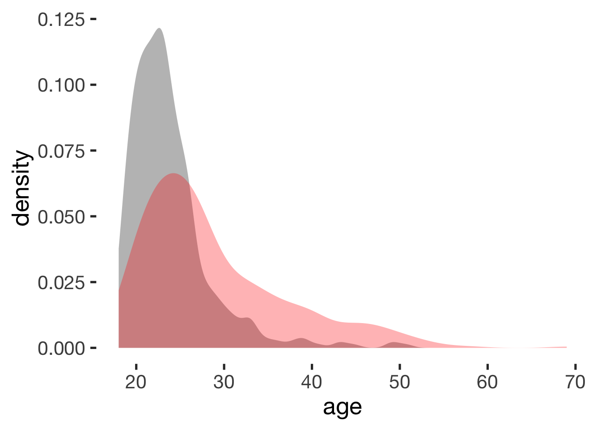
Religiosity
compare_by_group("religiosity", xsection)##
## Welch Two Sample t-test
##
## data: religiosity by hormonal_contraception
## t = -0.09, df = 900, p-value = 0.9
## alternative hypothesis: true difference in means is not equal to 0
## 95 percent confidence interval:
## -0.15 0.13
## sample estimates:
## mean in group hormonal contraceptive user mean in group naturally cycling
## 2 2
##
##
## Hedges's g
##
## g estimate: -0.0053 (negligible)
## 95 percent confidence interval:
## lower upper
## -0.13 0.12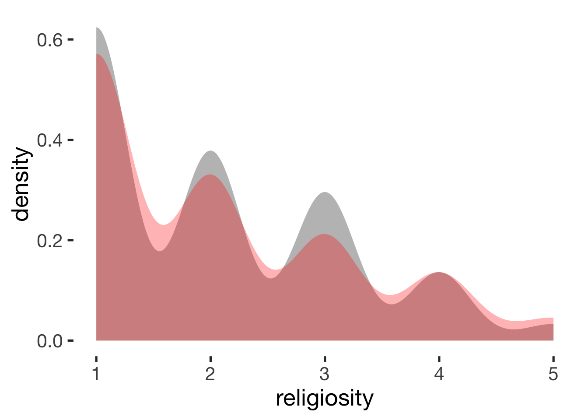
Age at first time
compare_by_group("first_time", xsection)##
## Welch Two Sample t-test
##
## data: first_time by hormonal_contraception
## t = 0.03, df = 800, p-value = 1
## alternative hypothesis: true difference in means is not equal to 0
## 95 percent confidence interval:
## -0.29 0.30
## sample estimates:
## mean in group hormonal contraceptive user mean in group naturally cycling
## 17 17
##
##
## Hedges's g
##
## g estimate: 0.0018 (negligible)
## 95 percent confidence interval:
## lower upper
## -0.12 0.13## Warning: Removed 29 rows containing non-finite values (stat_density).
Age at menarche
compare_by_group("menarche", xsection)##
## Welch Two Sample t-test
##
## data: menarche by hormonal_contraception
## t = 0.7, df = 400, p-value = 0.5
## alternative hypothesis: true difference in means is not equal to 0
## 95 percent confidence interval:
## -0.17 0.35
## sample estimates:
## mean in group hormonal contraceptive user mean in group naturally cycling
## 13 13
##
##
## Hedges's g
##
## g estimate: 0.061 (negligible)
## 95 percent confidence interval:
## lower upper
## -0.12 0.24## Warning: Removed 586 rows containing non-finite values (stat_density).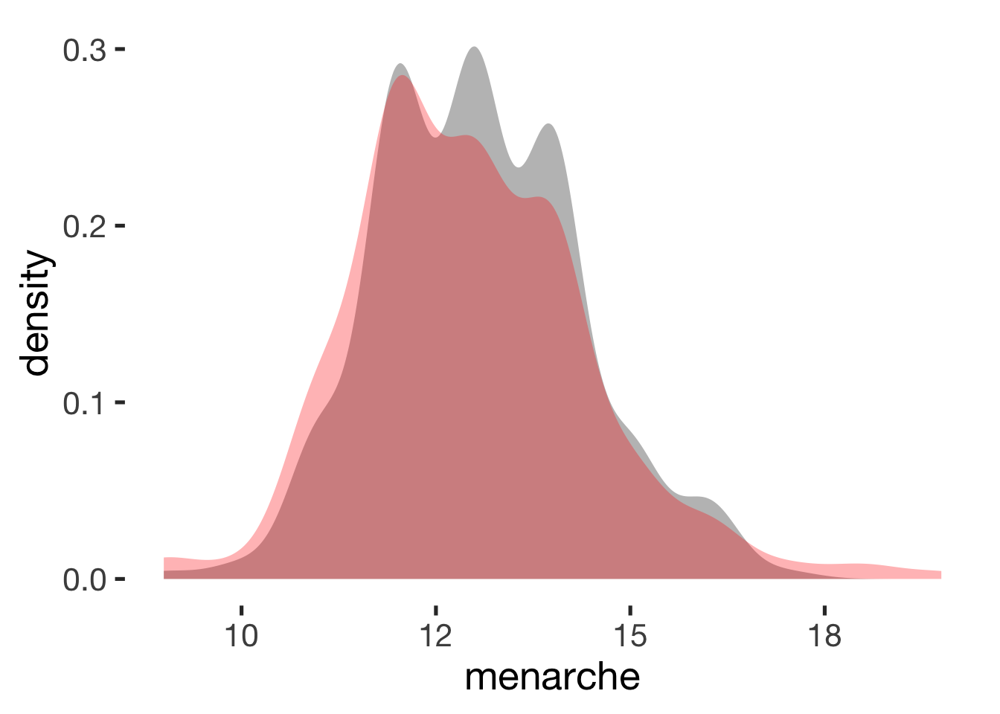
Relationship duration
compare_by_group("duration_relationship_total", xsection) + scale_x_sqrt(breaks = c(1,5, 10, 20, 30))##
## Welch Two Sample t-test
##
## data: duration_relationship_total by hormonal_contraception
## t = -7, df = 600, p-value = 8e-13
## alternative hypothesis: true difference in means is not equal to 0
## 95 percent confidence interval:
## -2.9 -1.7
## sample estimates:
## mean in group hormonal contraceptive user mean in group naturally cycling
## 3.0 5.3
##
##
## Hedges's g
##
## g estimate: -0.38 (small)
## 95 percent confidence interval:
## lower upper
## -0.51 -0.26## Warning: Removed 5 rows containing non-finite values (stat_density).Reported cycle length
compare_by_group("cycle_length", xsection)##
## Welch Two Sample t-test
##
## data: cycle_length by hormonal_contraception
## t = -5, df = 800, p-value = 0.0000001
## alternative hypothesis: true difference in means is not equal to 0
## 95 percent confidence interval:
## -1.56 -0.72
## sample estimates:
## mean in group hormonal contraceptive user mean in group naturally cycling
## 28 29
##
##
## Hedges's g
##
## g estimate: -0.31 (small)
## 95 percent confidence interval:
## lower upper
## -0.43 -0.19
Reported cycle regularity
jmv::contTables(
data = xsection,
rows = c( "cycle_regularity"),
cols = "hormonal_contraception", pcCol = T)##
## CONTINGENCY TABLES
##
## Contingency Tables
## ──────────────────────────────────────────────────────────────────────────────────────
## cycle_regularity 0 1 Total
## ──────────────────────────────────────────────────────────────────────────────────────
## very regular,
## up to 2 days off Observed 198 503 701
## % within column 46.2 80.5
##
## slightly irregular,
## up to 5 days off Observed 142 73 215
## % within column 33.1 11.7
##
## irregular,
## more than 5 days off Observed 89 49 138
## % within column 20.7 7.8
##
## Total Observed 429 625 1054
## % within column 100.0 100.0
## ──────────────────────────────────────────────────────────────────────────────────────
##
##
## χ² Tests
## ───────────────────────────────
## Value df p
## ───────────────────────────────
## χ² 135 2 < .001
## N 1054
## ───────────────────────────────Number of sexual partners
compare_by_group("number_sexual_partner", xsection) + scale_x_sqrt(breaks = c(1,5, 10, 20, 50, 100))##
## Welch Two Sample t-test
##
## data: number_sexual_partner by hormonal_contraception
## t = -5, df = 600, p-value = 0.000004
## alternative hypothesis: true difference in means is not equal to 0
## 95 percent confidence interval:
## -5.1 -2.1
## sample estimates:
## mean in group hormonal contraceptive user mean in group naturally cycling
## 5.7 9.3
##
##
## Hedges's g
##
## g estimate: -0.24 (small)
## 95 percent confidence interval:
## lower upper
## -0.36 -0.12
Extraversion
compare_by_group("BFI_extra", xsection)##
## Welch Two Sample t-test
##
## data: BFI_extra by hormonal_contraception
## t = -0.4, df = 900, p-value = 0.7
## alternative hypothesis: true difference in means is not equal to 0
## 95 percent confidence interval:
## -0.117 0.079
## sample estimates:
## mean in group hormonal contraceptive user mean in group naturally cycling
## 3.5 3.5
##
##
## Hedges's g
##
## g estimate: -0.024 (negligible)
## 95 percent confidence interval:
## lower upper
## -0.147 0.099Agreeableness
compare_by_group("BFI_agree", xsection)##
## Welch Two Sample t-test
##
## data: BFI_agree by hormonal_contraception
## t = -0.2, df = 900, p-value = 0.8
## alternative hypothesis: true difference in means is not equal to 0
## 95 percent confidence interval:
## -0.080 0.065
## sample estimates:
## mean in group hormonal contraceptive user mean in group naturally cycling
## 3.6 3.6
##
##
## Hedges's g
##
## g estimate: -0.013 (negligible)
## 95 percent confidence interval:
## lower upper
## -0.14 0.11
Neuroticism
compare_by_group("BFI_neuro", xsection)##
## Welch Two Sample t-test
##
## data: BFI_neuro by hormonal_contraception
## t = 2, df = 900, p-value = 0.02
## alternative hypothesis: true difference in means is not equal to 0
## 95 percent confidence interval:
## 0.019 0.206
## sample estimates:
## mean in group hormonal contraceptive user mean in group naturally cycling
## 3.1 3.0
##
##
## Hedges's g
##
## g estimate: 0.15 (negligible)
## 95 percent confidence interval:
## lower upper
## 0.022 0.268
Conscientiousness
compare_by_group("BFI_consc", xsection)##
## Welch Two Sample t-test
##
## data: BFI_consc by hormonal_contraception
## t = 2, df = 900, p-value = 0.02
## alternative hypothesis: true difference in means is not equal to 0
## 95 percent confidence interval:
## 0.016 0.185
## sample estimates:
## mean in group hormonal contraceptive user mean in group naturally cycling
## 3.6 3.5
##
##
## Hedges's g
##
## g estimate: 0.14 (negligible)
## 95 percent confidence interval:
## lower upper
## 0.02 0.27
Openness
compare_by_group("BFI_open", xsection)##
## Welch Two Sample t-test
##
## data: BFI_open by hormonal_contraception
## t = -5, df = 900, p-value = 0.0000004
## alternative hypothesis: true difference in means is not equal to 0
## 95 percent confidence interval:
## -0.28 -0.12
## sample estimates:
## mean in group hormonal contraceptive user mean in group naturally cycling
## 3.6 3.8
##
##
## Hedges's g
##
## g estimate: -0.32 (small)
## 95 percent confidence interval:
## lower upper
## -0.45 -0.20
Relationship satisfaction
compare_by_group("ZIP", xsection)##
## Welch Two Sample t-test
##
## data: ZIP by hormonal_contraception
## t = 3, df = 900, p-value = 0.002
## alternative hypothesis: true difference in means is not equal to 0
## 95 percent confidence interval:
## 0.049 0.227
## sample estimates:
## mean in group hormonal contraceptive user mean in group naturally cycling
## 4.2 4.0
##
##
## Hedges's g
##
## g estimate: 0.18 (negligible)
## 95 percent confidence interval:
## lower upper
## 0.061 0.307Occupation
xsection$occupation_clean = factor(xsection$occupation_clean, c( "Studentin", "Schülerin", "Auszubildende", "Berufstätig", "Hausfrau", "Nicht berufstätig"))
jmv::contTables(
data = xsection,
rows = c( "occupation_clean"),
cols = "hormonal_contraception", pcCol = T)##
## CONTINGENCY TABLES
##
## Contingency Tables
## ───────────────────────────────────────────────────────────────────
## occupation_clean 0 1 Total
## ───────────────────────────────────────────────────────────────────
## Studentin Observed 247 489 736
## % within column 57.7 78.5
##
## Schülerin Observed 3 12 15
## % within column 0.7 1.9
##
## Auszubildende Observed 4 10 14
## % within column 0.9 1.6
##
## Berufstätig Observed 151 104 255
## % within column 35.3 16.7
##
## Hausfrau Observed 14 6 20
## % within column 3.3 1.0
##
## Nicht berufstätig Observed 9 2 11
## % within column 2.1 0.3
##
## Total Observed 428 623 1051
## % within column 100.0 100.0
## ───────────────────────────────────────────────────────────────────
##
##
## χ² Tests
## ───────────────────────────────
## Value df p
## ───────────────────────────────
## χ² 70.1 5 < .001
## N 1051
## ───────────────────────────────bar_count(xsection, occupation_clean) + hcfacetReligion
jmv::contTables(
data = xsection,
rows = c( "religion_clean"),
cols = "hormonal_contraception", pcCol = T)##
## CONTINGENCY TABLES
##
## Contingency Tables
## ────────────────────────────────────────────────────────────────
## religion_clean 0 1 Total
## ────────────────────────────────────────────────────────────────
## Buddhismus Observed 5 2 7
## % within column 1.2 0.3
##
## Christentum Observed 217 366 583
## % within column 50.7 58.7
##
## Islam Observed 8 7 15
## % within column 1.9 1.1
##
## Judentum Observed 1 0 1
## % within column 0.2 0.0
##
## Nicht gläubig Observed 197 249 446
## % within column 46.0 39.9
##
## Total Observed 428 624 1052
## % within column 100.0 100.0
## ────────────────────────────────────────────────────────────────
##
##
## χ² Tests
## ──────────────────────────────
## Value df p
## ──────────────────────────────
## χ² 10.3 4 0.035
## N 1052
## ──────────────────────────────bar_count(xsection, religion_clean) + hcfacet
Income
xsection$income = factor(xsection$income, c("< 500€", "500-1000€", "1000-2000€", "2000-3000€", "> 3000€"))
jmv::contTables(
data = xsection,
rows = c( "income"),
cols = "hormonal_contraception", pcCol = T)##
## CONTINGENCY TABLES
##
## Contingency Tables
## ────────────────────────────────────────────────────────────
## income 0 1 Total
## ────────────────────────────────────────────────────────────
## < 500€ Observed 38 65 103
## % within column 16.5 27.3
##
## 500-1000€ Observed 61 90 151
## % within column 26.5 37.8
##
## 1000-2000€ Observed 64 44 108
## % within column 27.8 18.5
##
## 2000-3000€ Observed 42 25 67
## % within column 18.3 10.5
##
## > 3000€ Observed 25 14 39
## % within column 10.9 5.9
##
## Total Observed 230 238 468
## % within column 100.0 100.0
## ────────────────────────────────────────────────────────────
##
##
## χ² Tests
## ───────────────────────────────
## Value df p
## ───────────────────────────────
## χ² 23.6 4 < .001
## N 468
## ───────────────────────────────bar_count(xsection, income) + hcfacet
Income partner
xsection$income_partner = factor(xsection$income_partner, c("< 500€", "500-1000€", "1000-2000€", "2000-3000€", "> 3000€"))
jmv::contTables(
data = xsection,
rows = c( "income_partner"),
cols = "hormonal_contraception", pcCol = T)##
## CONTINGENCY TABLES
##
## Contingency Tables
## ────────────────────────────────────────────────────────────────
## income_partner 0 1 Total
## ────────────────────────────────────────────────────────────────
## < 500€ Observed 62 121 183
## % within column 14.5 19.4
##
## 500-1000€ Observed 122 245 367
## % within column 28.4 39.2
##
## 1000-2000€ Observed 101 141 242
## % within column 23.5 22.6
##
## 2000-3000€ Observed 64 73 137
## % within column 14.9 11.7
##
## > 3000€ Observed 80 45 125
## % within column 18.6 7.2
##
## Total Observed 429 625 1054
## % within column 100.0 100.0
## ────────────────────────────────────────────────────────────────
##
##
## χ² Tests
## ───────────────────────────────
## Value df p
## ───────────────────────────────
## χ² 42.3 4 < .001
## N 1054
## ───────────────────────────────bar_count(xsection, income_partner) + hcfacetRelationship status
xsection$relationship_status_clean = factor(xsection$relationship_status_clean, levels = c("Partnerschaft", "Verlobt", "Verheiratet"))
jmv::contTables(
data = xsection,
rows = c( "relationship_status_clean"),
cols = "hormonal_contraception", pcCol = T)##
## CONTINGENCY TABLES
##
## Contingency Tables
## ───────────────────────────────────────────────────────────────────────────
## relationship_status_clean 0 1 Total
## ───────────────────────────────────────────────────────────────────────────
## Partnerschaft Observed 304 577 881
## % within column 70.9 92.3
##
## Verlobt Observed 21 18 39
## % within column 4.9 2.9
##
## Verheiratet Observed 104 30 134
## % within column 24.2 4.8
##
## Total Observed 429 625 1054
## % within column 100.0 100.0
## ───────────────────────────────────────────────────────────────────────────
##
##
## χ² Tests
## ───────────────────────────────
## Value df p
## ───────────────────────────────
## χ² 92.4 2 < .001
## N 1054
## ───────────────────────────────bar_count(xsection, relationship_status_clean) + hcfacet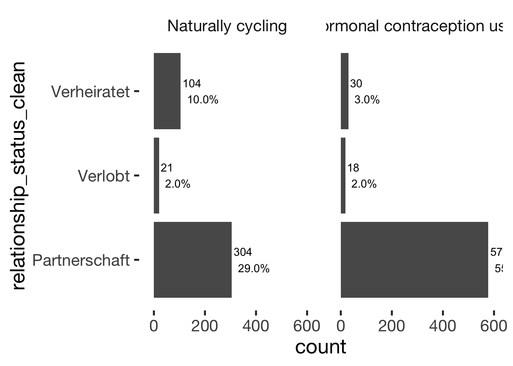
Cohabitation
xsection$cohabitation = factor(xsection$cohabitation, c("Long-distance", "Live in same city", "Live in same apartment"))
jmv::contTables(
data = xsection,
rows = c( "cohabitation"),
cols = "hormonal_contraception", pcCol = T)##
## CONTINGENCY TABLES
##
## Contingency Tables
## ────────────────────────────────────────────────────────────────────────
## cohabitation 0 1 Total
## ────────────────────────────────────────────────────────────────────────
## Long-distance Observed 107 221 328
## % within column 24.9 35.4
##
## Live in same city Observed 89 206 295
## % within column 20.7 33.0
##
## Live in same apartment Observed 233 198 431
## % within column 54.3 31.7
##
## Total Observed 429 625 1054
## % within column 100.0 100.0
## ────────────────────────────────────────────────────────────────────────
##
##
## χ² Tests
## ───────────────────────────────
## Value df p
## ───────────────────────────────
## χ² 54.3 2 < .001
## N 1054
## ───────────────────────────────bar_count(xsection, cohabitation) + hcfacet
jmv::contTables(
data = xsection,
rows = c( "days_with_partner_per_month"),
cols = "hormonal_contraception", pcCol = T)##
## CONTINGENCY TABLES
##
## Contingency Tables
## ─────────────────────────────────────────────────────────────────────────────
## days_with_partner_per_month 0 1 Total
## ─────────────────────────────────────────────────────────────────────────────
## < 3 days Observed 20 20 40
## % within column 18.7 9.0
##
## 3-5 days Observed 14 28 42
## % within column 13.1 12.7
##
## 5-7 days Observed 41 78 119
## % within column 38.3 35.3
##
## 7-14 days Observed 30 84 114
## % within column 28.0 38.0
##
## > 14 days Observed 2 11 13
## % within column 1.9 5.0
##
## Total Observed 107 221 328
## % within column 100.0 100.0
## ─────────────────────────────────────────────────────────────────────────────
##
##
## χ² Tests
## ──────────────────────────────
## Value df p
## ──────────────────────────────
## χ² 9.51 4 0.050
## N 328
## ──────────────────────────────bar_count(xsection, days_with_partner_per_month) + hcfacet
jmv::contTables(
data = xsection,
rows = c( "days_with_partner"),
cols = "hormonal_contraception", pcCol = T)##
## CONTINGENCY TABLES
##
## Contingency Tables
## ───────────────────────────────────────────────────────────────────
## days_with_partner 0 1 Total
## ───────────────────────────────────────────────────────────────────
## < 3 days Observed 118 201 319
## % within column 27.5 32.2
##
## 3-5 days Observed 95 213 308
## % within column 22.1 34.1
##
## 7 days Observed 216 211 427
## % within column 50.3 33.8
##
## Total Observed 429 625 1054
## % within column 100.0 100.0
## ───────────────────────────────────────────────────────────────────
##
##
## χ² Tests
## ───────────────────────────────
## Value df p
## ───────────────────────────────
## χ² 31.5 2 < .001
## N 1054
## ───────────────────────────────bar_count(xsection, days_with_partner) + hcfacet
jmv::contTables(
data = xsection,
rows = c( "nights_with_partner"),
cols = "hormonal_contraception", pcCol = T)##
## CONTINGENCY TABLES
##
## Contingency Tables
## ─────────────────────────────────────────────────────────────────────
## nights_with_partner 0 1 Total
## ─────────────────────────────────────────────────────────────────────
## < 3 nights Observed 142 239 381
## % within column 33.1 38.2
##
## 3-5 nights Observed 101 191 292
## % within column 23.5 30.6
##
## 7 nights Observed 186 195 381
## % within column 43.4 31.2
##
## Total Observed 429 625 1054
## % within column 100.0 100.0
## ─────────────────────────────────────────────────────────────────────
##
##
## χ² Tests
## ───────────────────────────────
## Value df p
## ───────────────────────────────
## χ² 16.8 2 < .001
## N 1054
## ───────────────────────────────bar_count(xsection, nights_with_partner) + hcfacet
Living situation
xsection$living_situation = factor(xsection$living_situation)
jmv::contTables(
data = xsection,
rows = c( "living_situation"),
cols = "hormonal_contraception", pcCol = T)##
## CONTINGENCY TABLES
##
## Contingency Tables
## ────────────────────────────────────────────────────────────────────────────────
## living_situation 0 1 Total
## ────────────────────────────────────────────────────────────────────────────────
## living alone Observed 90 175 265
## % within column 21.0 28.0
##
## living in all-female flatshare Observed 41 116 157
## % within column 9.6 18.6
##
## living in mixed-sex flatshare Observed 65 136 201
## % within column 15.2 21.8
##
## living with partner Observed 233 198 431
## % within column 54.3 31.7
##
## Total Observed 429 625 1054
## % within column 100.0 100.0
## ────────────────────────────────────────────────────────────────────────────────
##
##
## χ² Tests
## ───────────────────────────────
## Value df p
## ───────────────────────────────
## χ² 56.5 3 < .001
## N 1054
## ───────────────────────────────bar_count(xsection, living_situation) + hcfacetChildren
xsection$children_broad_categories = factor(xsection$children_broad_categories, levels = c("no_children", "children"))
jmv::contTables(
data = xsection,
rows = c( "children_narrow_categories"),
cols = "hormonal_contraception", pcCol = T)##
## CONTINGENCY TABLES
##
## Contingency Tables
## ────────────────────────────────────────────────────────────────────────────
## children_narrow_categories 0 1 Total
## ────────────────────────────────────────────────────────────────────────────
## Biological children Observed 83 27 110
## % within column 19.3 4.3
##
## Complex family Observed 7 3 10
## % within column 1.6 0.5
##
## Foster children Observed 0 1 1
## % within column 0.0 0.2
##
## No children Observed 333 591 924
## % within column 77.6 94.6
##
## Step children Observed 6 3 9
## % within column 1.4 0.5
##
## Total Observed 429 625 1054
## % within column 100.0 100.0
## ────────────────────────────────────────────────────────────────────────────
##
##
## χ² Tests
## ───────────────────────────────
## Value df p
## ───────────────────────────────
## χ² 70.1 4 < .001
## N 1054
## ───────────────────────────────bar_count(xsection, children_narrow_categories) + hcfacet
jmv::contTables(
data = xsection,
rows = c( "children_broad_categories"),
cols = "hormonal_contraception", pcCol = T)##
## CONTINGENCY TABLES
##
## Contingency Tables
## ───────────────────────────────────────────────────────────────────────────
## children_broad_categories 0 1 Total
## ───────────────────────────────────────────────────────────────────────────
## no_children Observed 334 593 927
## % within column 77.9 94.9
##
## children Observed 95 32 127
## % within column 22.1 5.1
##
## Total Observed 429 625 1054
## % within column 100.0 100.0
## ───────────────────────────────────────────────────────────────────────────
##
##
## χ² Tests
## ───────────────────────────────
## Value df p
## ───────────────────────────────
## χ² 69.6 1 < .001
## N 1054
## ───────────────────────────────bar_count(xsection, children_broad_categories) + hcfacet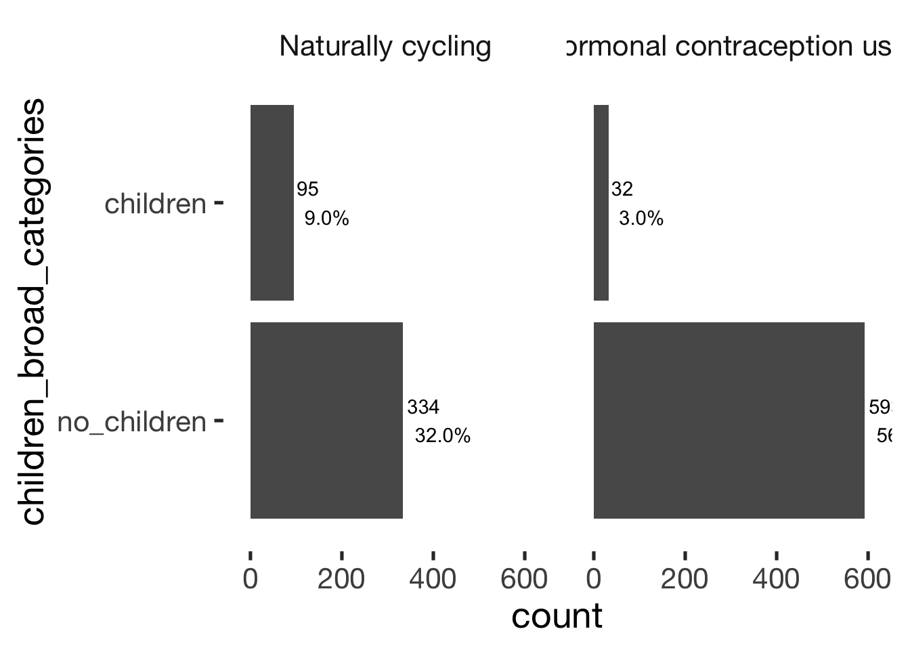
Comparison summary
Comparison of continuous variables
pander(comps)| var | HC user - Mean (SD) | Cycling - Mean (SD) | hedges_g | p_value |
|---|---|---|---|---|
| age | 23.7 (4.7) | 28.9 (8.4) | -0.61 | < .001 |
| religiosity | 2.0 (1.1) | 2.0 (1.2) | -0.01 | = .931 |
| first_time | 16.9 (2.3) | 16.9 (2.4) | 0.00 | = .977 |
| menarche | 13.1 (1.3) | 13.0 (1.5) | 0.06 | = .476 |
| duration_relationship_total | 3.0 (3.0) | 5.3 (5.9) | -0.38 | < .001 |
| cycle_length | 28.0 (3.0) | 29.1 (3.7) | -0.31 | < .001 |
| number_sexual_partner | 5.7 (7.2) | 9.3 (14.9) | -0.24 | < .001 |
| BFI_extra | 3.5 (0.8) | 3.5 (0.8) | -0.02 | = .703 |
| BFI_agree | 3.6 (0.6) | 3.6 (0.6) | -0.01 | = .840 |
| BFI_neuro | 3.1 (0.7) | 3.0 (0.8) | 0.15 | = .018 |
| BFI_consc | 3.6 (0.7) | 3.5 (0.7) | 0.14 | = .019 |
| BFI_open | 3.6 (0.6) | 3.8 (0.6) | -0.32 | < .001 |
| ZIP | 4.2 (0.7) | 4.0 (0.7) | 0.18 | = .002 |
Categorical regression with many predictors at once
altogether = glm(hormonal_contraception ~ age + cohabitation + living_situation + religiosity + ZIP + BFI_extra + BFI_neuro + BFI_agree + BFI_consc + BFI_open + first_time + duration_relationship_years + log1p(number_sexual_partner) + children_broad_categories + relationship_status_clean + occupation_clean + income_partner, data = xsection, family = binomial("probit"))
summary(altogether)##
## Call:
## glm(formula = hormonal_contraception ~ age + cohabitation + living_situation +
## religiosity + ZIP + BFI_extra + BFI_neuro + BFI_agree + BFI_consc +
## BFI_open + first_time + duration_relationship_years + log1p(number_sexual_partner) +
## children_broad_categories + relationship_status_clean + occupation_clean +
## income_partner, family = binomial("probit"), data = xsection)
##
## Deviance Residuals:
## Min 1Q Median 3Q Max
## -2.435 -1.007 0.579 0.855 2.507
##
## Coefficients: (1 not defined because of singularities)
## Estimate Std. Error z value Pr(>|z|)
## (Intercept) 1.44379 0.74119 1.95 0.05142 .
## age -0.06476 0.01426 -4.54 0.00000561 ***
## cohabitationLive in same city 0.15748 0.11704 1.35 0.17847
## cohabitationLive in same apartment -0.20454 0.13146 -1.56 0.11973
## living_situationliving in all-female flatshare 0.07042 0.15019 0.47 0.63917
## living_situationliving in mixed-sex flatshare -0.12374 0.13620 -0.91 0.36361
## living_situationliving with partner NA NA NA NA
## religiosity 0.02176 0.04203 0.52 0.60463
## ZIP 0.16403 0.06273 2.61 0.00893 **
## BFI_extra 0.03132 0.06196 0.51 0.61324
## BFI_neuro 0.09406 0.06627 1.42 0.15584
## BFI_agree -0.02284 0.08065 -0.28 0.77702
## BFI_consc 0.23409 0.06960 3.36 0.00077 ***
## BFI_open -0.37380 0.07335 -5.10 0.00000035 ***
## first_time 0.00873 0.02236 0.39 0.69603
## duration_relationship_years 0.01766 0.01733 1.02 0.30828
## log1p(number_sexual_partner) -0.07085 0.07860 -0.90 0.36739
## children_broad_categorieschildren -0.06439 0.17741 -0.36 0.71665
## relationship_status_cleanVerlobt -0.15917 0.23852 -0.67 0.50457
## relationship_status_cleanVerheiratet -0.59552 0.18578 -3.21 0.00135 **
## occupation_cleanSchülerin 0.52941 0.45055 1.18 0.23999
## occupation_cleanAuszubildende 0.32267 0.40049 0.81 0.42042
## occupation_cleanBerufstätig 0.05580 0.13338 0.42 0.67567
## occupation_cleanHausfrau 0.17117 0.36395 0.47 0.63813
## occupation_cleanNicht berufstätig -0.96638 0.50030 -1.93 0.05341 .
## income_partner500-1000€ 0.09692 0.13262 0.73 0.46487
## income_partner1000-2000€ 0.07921 0.14379 0.55 0.58171
## income_partner2000-3000€ 0.05934 0.16989 0.35 0.72687
## income_partner> 3000€ 0.19883 0.19986 0.99 0.31982
## ---
## Signif. codes: 0 '***' 0.001 '**' 0.01 '*' 0.05 '.' 0.1 ' ' 1
##
## (Dispersion parameter for binomial family taken to be 1)
##
## Null deviance: 1365.8 on 1016 degrees of freedom
## Residual deviance: 1122.2 on 989 degrees of freedom
## (37 observations deleted due to missingness)
## AIC: 1178
##
## Number of Fisher Scoring iterations: 5Categorical regression limited to lax subset
altogether = glm(hormonal_contraception ~ age + cohabitation + living_situation + religiosity + ZIP + BFI_extra + BFI_neuro + BFI_agree + BFI_consc + BFI_open + first_time + duration_relationship_years + log1p(number_sexual_partner) + children_broad_categories + relationship_status_clean + occupation_clean + income_partner, data = xsection %>% filter(!is.na(included_lax)), family = binomial("probit"))
summary(altogether)##
## Call:
## glm(formula = hormonal_contraception ~ age + cohabitation + living_situation +
## religiosity + ZIP + BFI_extra + BFI_neuro + BFI_agree + BFI_consc +
## BFI_open + first_time + duration_relationship_years + log1p(number_sexual_partner) +
## children_broad_categories + relationship_status_clean + occupation_clean +
## income_partner, family = binomial("probit"), data = xsection %>%
## filter(!is.na(included_lax)))
##
## Deviance Residuals:
## Min 1Q Median 3Q Max
## -2.374 -0.640 0.512 0.751 1.658
##
## Coefficients: (1 not defined because of singularities)
## Estimate Std. Error z value Pr(>|z|)
## (Intercept) 2.67698 1.21001 2.21 0.0269 *
## age -0.04113 0.02777 -1.48 0.1386
## cohabitationLive in same city 0.23039 0.17782 1.30 0.1951
## cohabitationLive in same apartment -0.31849 0.21603 -1.47 0.1404
## living_situationliving in all-female flatshare -0.03763 0.23561 -0.16 0.8731
## living_situationliving in mixed-sex flatshare -0.30461 0.20124 -1.51 0.1301
## living_situationliving with partner NA NA NA NA
## religiosity 0.05996 0.06547 0.92 0.3597
## ZIP 0.05308 0.11036 0.48 0.6305
## BFI_extra -0.09321 0.09820 -0.95 0.3425
## BFI_neuro -0.01510 0.10506 -0.14 0.8857
## BFI_agree -0.04111 0.12686 -0.32 0.7459
## BFI_consc 0.25412 0.11110 2.29 0.0222 *
## BFI_open -0.34491 0.10984 -3.14 0.0017 **
## first_time -0.00127 0.03490 -0.04 0.9709
## duration_relationship_years -0.01880 0.02902 -0.65 0.5171
## log1p(number_sexual_partner) -0.17006 0.12527 -1.36 0.1746
## children_broad_categorieschildren -0.07860 0.31329 -0.25 0.8019
## relationship_status_cleanVerlobt -0.25265 0.39302 -0.64 0.5203
## relationship_status_cleanVerheiratet -0.27336 0.32458 -0.84 0.3997
## occupation_cleanSchülerin 4.57837 135.22482 0.03 0.9730
## occupation_cleanAuszubildende -0.13051 0.61475 -0.21 0.8319
## occupation_cleanBerufstätig -0.17331 0.21402 -0.81 0.4181
## occupation_cleanHausfrau 0.10827 0.95176 0.11 0.9094
## occupation_cleanNicht berufstätig -0.44499 0.69345 -0.64 0.5211
## income_partner500-1000€ 0.19814 0.19447 1.02 0.3083
## income_partner1000-2000€ 0.04447 0.21683 0.21 0.8375
## income_partner2000-3000€ 0.02285 0.27543 0.08 0.9339
## income_partner> 3000€ 0.17485 0.32482 0.54 0.5904
## ---
## Signif. codes: 0 '***' 0.001 '**' 0.01 '*' 0.05 '.' 0.1 ' ' 1
##
## (Dispersion parameter for binomial family taken to be 1)
##
## Null deviance: 565.86 on 494 degrees of freedom
## Residual deviance: 477.26 on 467 degrees of freedom
## (22 observations deleted due to missingness)
## AIC: 533.3
##
## Number of Fisher Scoring iterations: 14Restricted to predictors significant in the whole sample
fewer_preds = glm(hormonal_contraception ~ age + cohabitation + + ZIP + BFI_consc + BFI_open + relationship_status_clean, data = xsection %>% filter(!is.na(included_lax)), family = binomial("probit"))
summary(fewer_preds)##
## Call:
## glm(formula = hormonal_contraception ~ age + cohabitation + +ZIP +
## BFI_consc + BFI_open + relationship_status_clean, family = binomial("probit"),
## data = xsection %>% filter(!is.na(included_lax)))
##
## Deviance Residuals:
## Min 1Q Median 3Q Max
## -2.326 -0.906 0.575 0.758 2.066
##
## Coefficients:
## Estimate Std. Error z value Pr(>|z|)
## (Intercept) 2.5342 0.6909 3.67 0.00024 ***
## age -0.0587 0.0166 -3.53 0.00041 ***
## cohabitationLive in same city 0.0511 0.1580 0.32 0.74649
## cohabitationLive in same apartment -0.2522 0.1643 -1.53 0.12494
## ZIP 0.0433 0.1001 0.43 0.66576
## BFI_consc 0.2109 0.0953 2.21 0.02701 *
## BFI_open -0.3591 0.0983 -3.65 0.00026 ***
## relationship_status_cleanVerlobt -0.6205 0.3314 -1.87 0.06115 .
## relationship_status_cleanVerheiratet -0.2598 0.2702 -0.96 0.33614
## ---
## Signif. codes: 0 '***' 0.001 '**' 0.01 '*' 0.05 '.' 0.1 ' ' 1
##
## (Dispersion parameter for binomial family taken to be 1)
##
## Null deviance: 609.76 on 516 degrees of freedom
## Residual deviance: 542.03 on 508 degrees of freedom
## AIC: 560
##
## Number of Fisher Scoring iterations: 4Further plots
bar_count(xsection, has_not_had_sex_yet)
bar_count(xsection, had_sex_with_partner_yet)
bar_count(xsection, trying_to_get_pregnant)
bar_count(xsection, breast_feeding_in_last_3_months)
bar_count(xsection, pregnant_in_last_3_months)
bar_count(xsection, hormonal_medication_in_last_3_months)
bar_count(xsection, pill_in_last_3_months)
Predictors
Sample sizes
Comparing the various predictors
diary %>% select(person, day_number, fertile_narrow, fertile_broad, fertile_narrow_forward_counted, fertile_broad_forward_counted, prc_stirn_b_squished, prc_stirn_b_backward_inferred) %>%
gather(predictor, value, -person) %>%
mutate(description = recode(predictor, "day_number" = '',
"fertile_narrow" = 'narrow window, backward counted',
"fertile_broad" = 'broad window, backward counted',
"fertile_narrow_forward_counted" = 'narrow window, forward counted',
"fertile_broad_forward_counted" = 'broad window, forward counted',
"prc_stirn_b_squished" = 'continuous, backward counted',
"prc_stirn_b_backward_inferred" = 'continuous, backward counted from reported cycle length'),
predictor = factor(recode(predictor, "day_number" = 'all days',
"fertile_narrow" = 'narrow BC',
"fertile_broad" = 'broad BC',
"fertile_narrow_forward_counted" = 'narrow FC',
"fertile_broad_forward_counted" = 'broad FC',
"prc_stirn_b_squished" = 'cont. BC',
"prc_stirn_b_backward_inferred" = 'continuous BCi'), levels =
c("all days", "narrow BC", "broad BC", "narrow FC", "broad FC",
"cont. BC", "continuous BCi"))) %>%
group_by(predictor, description) %>%
summarise(`n (days)` = n_nonmissing(value),
`% of days` = form(n_nonmissing(value)/n()*100),
`n (women)` = n_distinct(person[!is.na(value)])) %>%
data.frame(check.names = F) %>%
pander()| predictor | description | n (days) | % of days | n (women) |
|---|---|---|---|---|
| all days | 28729 | 100.00 | 1054 | |
| narrow BC | narrow window, backward counted | 9517 | 33.13 | 796 |
| broad BC | broad window, backward counted | 11518 | 40.09 | 798 |
| narrow FC | narrow window, forward counted | 12219 | 42.53 | 978 |
| broad FC | broad window, forward counted | 15940 | 55.48 | 1003 |
| cont. BC | continuous, backward counted | 17685 | 61.56 | 819 |
| continuous BCi | continuous, backward counted from reported cycle length | 26702 | 92.94 | 1054 |
pander(missingness_patterns(diary %>% ungroup %>% select(prc_stirn_b, prc_stirn_b_forward_counted, prc_stirn_b_backward_inferred)))index col missings 1 prc_stirn_b 11078 2 prc_stirn_b_backward_inferred 2027 3 prc_stirn_b_forward_counted 1898
| Pattern | Freq | Culprit |
|---|---|---|
| _____ | 16579 | _ |
| 1____ | 9051 | prc_stirn_b |
| 1_2__ | 1201 | |
| ____3 | 1072 | prc_stirn_b_forward_counted |
| 1_2_3 | 826 |
Correlations
diary %>% select(prc_stirn_b_squished, prc_stirn_b_forward_counted) %>%
cor(use='pairwise.complete.obs') %>% form() %>% pander()| prc_stirn_b_squished | prc_stirn_b_forward_counted | |
|---|---|---|
| prc_stirn_b_squished | 1.00 | 0.67 |
| prc_stirn_b_forward_counted | 0.67 | 1.00 |
Plotted menstruation and fertility estimates
wall = list(scale_y_discrete("Person"),
geom_tile(),
scale_x_continuous("Relative to last observed menstrual onset", limits= c(-40, 15), breaks = seq(-40,15, by = 5)),
geom_point(aes(colour=menstruation_strength)),
scale_fill_distiller("Fertile window probability"),
scale_color_manual("Menstruation strength", values = c("0"="transparent","1"="pink","2"="red","3"="darkred")),
geom_vline(aes(xintercept = limits, linetype = Window),data = data.frame(limits= c(-14.5,-19.5, -13.5,-22.5,-3.5,-12.5), Window = rep(c("narrow","broad","infertile"),each=2)),color = 'black', size = 0.9, alpha = 0.9,show.legend = T),
scale_linetype_manual("Window", values = c("narrow"="solid","broad"="dashed","infertile"="dotted"))
)Predictor: Backward-counted
Cycling
diary %>% filter(included_all == "cycling",fertile_days_known_backward > 10, sufficient_diary_coverage==T, ever_menstruated == T, any_RCD == T, person < 400) %>%
ggplot(aes(x = RCD, y = factor(person), fill = prc_stirn_b)) + wall ## Warning: Removed 668 rows containing missing values (geom_tile).## Warning: Removed 668 rows containing missing values (geom_point).Hormonally contracepting
diary %>% filter(included_all == "horm_contra",fertile_days_known_backward > 10, sufficient_diary_coverage==T, ever_menstruated == T, any_RCD == T, person < 400) %>%
ggplot(aes(x = RCD, y = factor(person), fill = prc_stirn_b)) + wall ## Warning: Removed 1411 rows containing missing values (geom_tile).## Warning: Removed 1411 rows containing missing values (geom_point).
####Predictor: Forward-counted ##### Cycling
diary %>% filter(included_all == "cycling",fertile_days_known_backward > 10, sufficient_diary_coverage==T, ever_menstruated == T, any_RCD == T, person < 400) %>%
ggplot(aes(x = RCD, y = factor(person), fill = prc_stirn_b_forward_counted)) + wall ## Warning: Removed 668 rows containing missing values (geom_tile).## Warning: Removed 668 rows containing missing values (geom_point).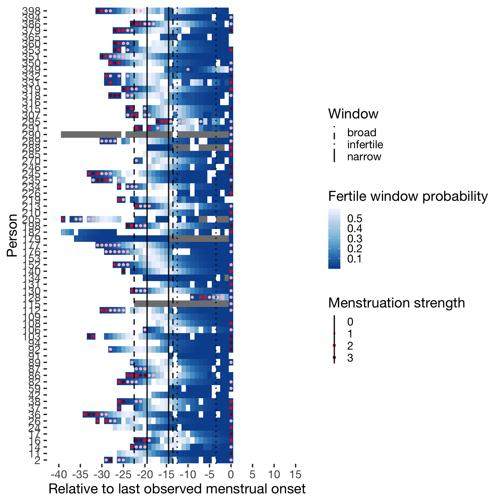
Hormonally contracepting
diary %>% filter(included_all == "horm_contra",fertile_days_known_backward > 10, sufficient_diary_coverage==T, ever_menstruated == T, any_RCD == T, person < 400) %>%
ggplot(aes(x = RCD, y = factor(person), fill = prc_stirn_b_forward_counted)) + wall ## Warning: Removed 1411 rows containing missing values (geom_tile).## Warning: Removed 1411 rows containing missing values (geom_point).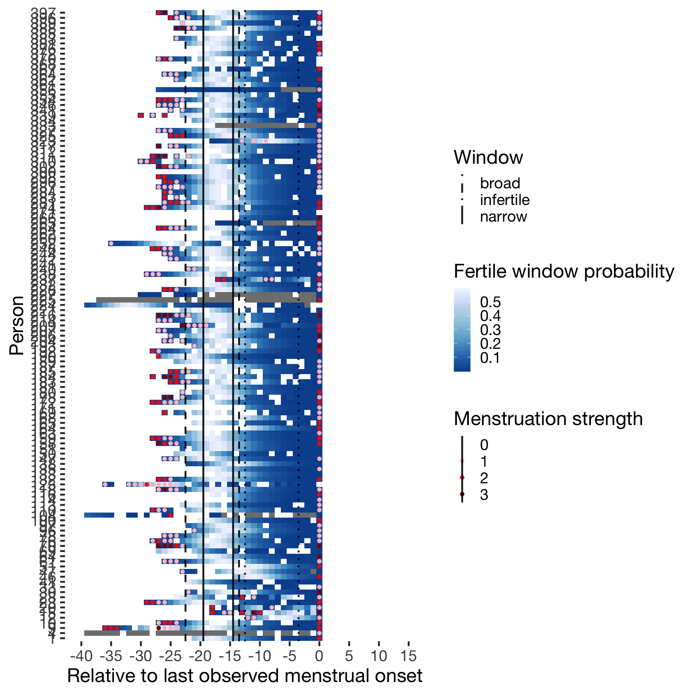
Predictor: Forward and backward averaged
Cycling
diary %>% filter(included_all == "cycling",fertile_days_known_backward > 10, sufficient_diary_coverage==T, ever_menstruated == T, any_RCD == T, person < 400) %>%
ggplot(aes(x = RCD, y = factor(person), fill = fertile_forward_and_backward)) + wall ## Warning: Removed 668 rows containing missing values (geom_tile).## Warning: Removed 668 rows containing missing values (geom_point).
Hormonally contracepting
diary %>% filter(included_all == "horm_contra",fertile_days_known_backward > 10, sufficient_diary_coverage==T, ever_menstruated == T, any_RCD == T, person < 400) %>%
ggplot(aes(x = RCD, y = factor(person), fill = fertile_forward_and_backward)) + wall ## Warning: Removed 1411 rows containing missing values (geom_tile).## Warning: Removed 1411 rows containing missing values (geom_point).
Diary generalizability
multi_rel = function(x, lme = T, lmer = T) {
mrel = x %>%
filter(day_number <= 40) %>%
gather(variable, value, -person, -day_number) %>%
multilevel.reliability(., "person", "day_number", lme = lme, lmer = lmer, items = "variable", values = "value", long = T, aov = F)
mrel
}Extra-pair desire and behaviour
diary %>%
select(person, day_number, extra_pair_2:extra_pair_13) %>%
multi_rel(lmer = T, lme = F)## Warning: attributes are not identical across measure variables;
## they will be dropped## Warning in checkConv(attr(opt, "derivs"), opt$par, ctrl = control$checkConv, : Model failed to converge with
## max|grad| = 0.0021235 (tol = 0.002, component 1)
Multilevel Generalizability analysis
Call: multilevel.reliability(x = ., grp = "person", Time = "day_number",
items = "variable", aov = F, lmer = lmer, lme = lme, long = T,
values = "value")
The data had 1054 observations taken over 41 time intervals for 12 items.
Alternative estimates of reliability based upon Generalizability theory
RkF = 0.99 Reliability of average of all ratings across all items and times (Fixed time effects)
R1R = 0.5 Generalizability of a single time point across all items (Random time effects)
RkR = 0.98 Generalizability of average time points across all items (Random time effects)
Rc = 0.76 Generalizability of change (fixed time points, fixed items)
RkRn = 0.98 Generalizability of between person differences averaged over time (time nested within people)
Rcn = 0.6 Generalizability of within person variations averaged over items (time nested within people)
These reliabilities are derived from the components of variance estimated by lmer
variance Percent
ID 0.28 0.12
Time 0.00 0.00
Items 0.21 0.09
ID x time 0.24 0.10
ID x items 0.40 0.17
time x items 0.28 0.12
Residual 0.90 0.39
Total 2.31 1.00
The nested components of variance estimated from lmer are:
variance Percent
id 0.32 0.157
id(time) 0.19 0.093
residual 1.51 0.750
total 2.01 1.000
To see the ANOVA and alpha by subject, use the short = FALSE option.
To see the summaries of the ICCs by subject and time, use all=TRUE
To see specific objects select from the following list:
ANOVA s.lmer s.lme alpha summary.by.person summary.by.time ICC.by.person ICC.by.time lmer long CallExtra-pair desire
diary %>%
select(person, day_number, extra_pair_7, extra_pair_10, extra_pair_11, extra_pair_12, extra_pair_13) %>%
multi_rel(lmer = T, lme = F)## Warning: attributes are not identical across measure variables;
## they will be dropped## Warning in checkConv(attr(opt, "derivs"), opt$par, ctrl = control$checkConv, : Model failed to converge with
## max|grad| = 0.0145761 (tol = 0.002, component 1)
Multilevel Generalizability analysis
Call: multilevel.reliability(x = ., grp = "person", Time = "day_number",
items = "variable", aov = F, lmer = lmer, lme = lme, long = T,
values = "value")
The data had 1054 observations taken over 41 time intervals for 5 items.
Alternative estimates of reliability based upon Generalizability theory
RkF = 0.99 Reliability of average of all ratings across all items and times (Fixed time effects)
R1R = 0.55 Generalizability of a single time point across all items (Random time effects)
RkR = 0.98 Generalizability of average time points across all items (Random time effects)
Rc = 0.62 Generalizability of change (fixed time points, fixed items)
RkRn = 0.98 Generalizability of between person differences averaged over time (time nested within people)
Rcn = 0.36 Generalizability of within person variations averaged over items (time nested within people)
These reliabilities are derived from the components of variance estimated by lmer
variance Percent
ID 0.37 0.17
Time 0.00 0.00
Items 0.14 0.07
ID x time 0.22 0.11
ID x items 0.32 0.15
time x items 0.37 0.17
Residual 0.68 0.32
Total 2.09 1.00
The nested components of variance estimated from lmer are:
variance Percent
id 0.43 0.253
id(time) 0.13 0.076
residual 1.14 0.670
total 1.70 1.000
To see the ANOVA and alpha by subject, use the short = FALSE option.
To see the summaries of the ICCs by subject and time, use all=TRUE
To see specific objects select from the following list:
ANOVA s.lmer s.lme alpha summary.by.person summary.by.time ICC.by.person ICC.by.time lmer long CallExtra-pair flirting
diary %>%
select(person, day_number, extra_pair_4, extra_pair_8, extra_pair_9) %>%
multi_rel(lmer = T, lme = F)## Warning: attributes are not identical across measure variables;
## they will be dropped## Warning in checkConv(attr(opt, "derivs"), opt$par, ctrl = control$checkConv, : Model failed to converge with
## max|grad| = 0.00281509 (tol = 0.002, component 1)
Multilevel Generalizability analysis
Call: multilevel.reliability(x = ., grp = "person", Time = "day_number",
items = "variable", aov = F, lmer = lmer, lme = lme, long = T,
values = "value")
The data had 1054 observations taken over 41 time intervals for 3 items.
Alternative estimates of reliability based upon Generalizability theory
RkF = 0.99 Reliability of average of all ratings across all items and times (Fixed time effects)
R1R = 0.46 Generalizability of a single time point across all items (Random time effects)
RkR = 0.97 Generalizability of average time points across all items (Random time effects)
Rc = 0.49 Generalizability of change (fixed time points, fixed items)
RkRn = 0.97 Generalizability of between person differences averaged over time (time nested within people)
Rcn = 0.36 Generalizability of within person variations averaged over items (time nested within people)
These reliabilities are derived from the components of variance estimated by lmer
variance Percent
ID 0.21 0.19
Time 0.00 0.00
Items 0.01 0.01
ID x time 0.14 0.12
ID x items 0.11 0.10
time x items 0.21 0.19
Residual 0.44 0.39
Total 1.10 1.00
The nested components of variance estimated from lmer are:
variance Percent
id 0.24 0.27
id(time) 0.10 0.11
residual 0.54 0.61
total 0.89 1.00
To see the ANOVA and alpha by subject, use the short = FALSE option.
To see the summaries of the ICCs by subject and time, use all=TRUE
To see specific objects select from the following list:
ANOVA s.lmer s.lme alpha summary.by.person summary.by.time ICC.by.person ICC.by.time lmer long CallExtra-pair compliments
diary %>%
select(person, day_number, extra_pair_2, extra_pair_3) %>%
multi_rel(lmer = T, lme = F)## Warning: attributes are not identical across measure variables;
## they will be dropped## Warning in checkConv(attr(opt, "derivs"), opt$par, ctrl = control$checkConv, : Model failed to converge with
## max|grad| = 0.0619795 (tol = 0.002, component 1)
Multilevel Generalizability analysis
Call: multilevel.reliability(x = ., grp = "person", Time = "day_number",
items = "variable", aov = F, lmer = lmer, lme = lme, long = T,
values = "value")
The data had 1054 observations taken over 41 time intervals for 2 items.
Alternative estimates of reliability based upon Generalizability theory
RkF = 0.99 Reliability of average of all ratings across all items and times (Fixed time effects)
R1R = 0.44 Generalizability of a single time point across all items (Random time effects)
RkR = 0.97 Generalizability of average time points across all items (Random time effects)
Rc = 0.54 Generalizability of change (fixed time points, fixed items)
RkRn = 0.97 Generalizability of between person differences averaged over time (time nested within people)
Rcn = 0.24 Generalizability of within person variations averaged over items (time nested within people)
These reliabilities are derived from the components of variance estimated by lmer
variance Percent
ID 0.58 0.02
Time 0.00 0.00
Items 34.54 0.92
ID x time 0.54 0.01
ID x items 0.39 0.01
time x items 0.58 0.02
Residual 0.93 0.02
Total 37.56 1.00
The nested components of variance estimated from lmer are:
variance Percent
id 0.78 0.305
id(time) 0.24 0.093
residual 1.54 0.602
total 2.55 1.000
To see the ANOVA and alpha by subject, use the short = FALSE option.
To see the summaries of the ICCs by subject and time, use all=TRUE
To see specific objects select from the following list:
ANOVA s.lmer s.lme alpha summary.by.person summary.by.time ICC.by.person ICC.by.time lmer long CallExtra-pair going out
diary %>%
select(person, day_number, extra_pair_5, extra_pair_6) %>%
multi_rel(lmer = T, lme = F)## Warning: attributes are not identical across measure variables;
## they will be dropped## singular fit
Multilevel Generalizability analysis
Call: multilevel.reliability(x = ., grp = "person", Time = "day_number",
items = "variable", aov = F, lmer = lmer, lme = lme, long = T,
values = "value")
The data had 1054 observations taken over 41 time intervals for 2 items.
Alternative estimates of reliability based upon Generalizability theory
RkF = 0.98 Reliability of average of all ratings across all items and times (Fixed time effects)
R1R = 0.28 Generalizability of a single time point across all items (Random time effects)
RkR = 0.94 Generalizability of average time points across all items (Random time effects)
Rc = 0.75 Generalizability of change (fixed time points, fixed items)
RkRn = 0.94 Generalizability of between person differences averaged over time (time nested within people)
Rcn = 0.61 Generalizability of within person variations averaged over items (time nested within people)
These reliabilities are derived from the components of variance estimated by lmer
variance Percent
ID 0.46 0.13
Time 0.00 0.00
Items 0.05 0.01
ID x time 1.35 0.36
ID x items 0.46 0.12
time x items 0.46 0.13
Residual 0.92 0.25
Total 3.69 1.00
The nested components of variance estimated from lmer are:
variance Percent
id 0.69 0.21
id(time) 1.10 0.34
residual 1.42 0.44
total 3.21 1.00
To see the ANOVA and alpha by subject, use the short = FALSE option.
To see the summaries of the ICCs by subject and time, use all=TRUE
To see specific objects select from the following list:
ANOVA s.lmer s.lme alpha summary.by.person summary.by.time ICC.by.person ICC.by.time lmer long CallExtra-pair sexual fantasies
diary %>%
select(person, day_number, extra_pair_13) %>%
multi_rel(lmer = F, lme = T)
Multilevel Generalizability analysis
Call: multilevel.reliability(x = ., grp = "person", Time = "day_number",
items = "variable", aov = F, lmer = lmer, lme = lme, long = T,
values = "value")
The data had 1054 observations taken over 41 time intervals for 1 items.
Alternative estimates of reliability based upon Generalizability theory
RkRn = 0.97 Generalizability of between person differences averaged over time (time nested within people)
Rcn = 0.85 Generalizability of within person variations averaged over items (time nested within people)
The nested components of variance estimated from lme are:
Variance Percent
id 0.67 0.453
id(time) 0.69 0.466
residual 0.12 0.081
total 1.48 1.000
To see the ANOVA and alpha by subject, use the short = FALSE option.
To see the summaries of the ICCs by subject and time, use all=TRUE
To see specific objects select from the following list:
ANOVA s.lmer s.lme alpha summary.by.person summary.by.time ICC.by.person ICC.by.time lmer long CallIn-pair desire
diary %>%
select(person, day_number, sexual_intercourse_1_6scale, desirability_partner, attention_2) %>%
multi_rel(lme = F, lmer = T)## Warning: attributes are not identical across measure variables;
## they will be dropped
Multilevel Generalizability analysis
Call: multilevel.reliability(x = ., grp = "person", Time = "day_number",
items = "variable", aov = F, lmer = lmer, lme = lme, long = T,
values = "value")
The data had 1054 observations taken over 41 time intervals for 3 items.
Alternative estimates of reliability based upon Generalizability theory
RkF = 0.99 Reliability of average of all ratings across all items and times (Fixed time effects)
R1R = 0.38 Generalizability of a single time point across all items (Random time effects)
RkR = 0.96 Generalizability of average time points across all items (Random time effects)
Rc = 0.82 Generalizability of change (fixed time points, fixed items)
RkRn = 0.96 Generalizability of between person differences averaged over time (time nested within people)
Rcn = 0.75 Generalizability of within person variations averaged over items (time nested within people)
These reliabilities are derived from the components of variance estimated by lmer
variance Percent
ID 0.68 0.21
Time 0.00 0.00
Items 0.09 0.03
ID x time 0.97 0.30
ID x items 0.17 0.05
time x items 0.68 0.21
Residual 0.62 0.19
Total 3.22 1.00
The nested components of variance estimated from lmer are:
variance Percent
id 0.74 0.29
id(time) 0.89 0.35
residual 0.88 0.35
total 2.51 1.00
To see the ANOVA and alpha by subject, use the short = FALSE option.
To see the summaries of the ICCs by subject and time, use all=TRUE
To see specific objects select from the following list:
ANOVA s.lmer s.lme alpha summary.by.person summary.by.time ICC.by.person ICC.by.time lmer long CallSelf-perceived desirability
diary %>%
select(person, day_number, desirability_1) %>%
multi_rel(lme = T, lmer = F)
Multilevel Generalizability analysis
Call: multilevel.reliability(x = ., grp = "person", Time = "day_number",
items = "variable", aov = F, lmer = lmer, lme = lme, long = T,
values = "value")
The data had 1054 observations taken over 41 time intervals for 1 items.
Alternative estimates of reliability based upon Generalizability theory
RkRn = 0.96 Generalizability of between person differences averaged over time (time nested within people)
Rcn = 0.86 Generalizability of within person variations averaged over items (time nested within people)
The nested components of variance estimated from lme are:
Variance Percent
id 0.72 0.364
id(time) 1.08 0.545
residual 0.18 0.091
total 1.98 1.000
To see the ANOVA and alpha by subject, use the short = FALSE option.
To see the summaries of the ICCs by subject and time, use all=TRUE
To see specific objects select from the following list:
ANOVA s.lmer s.lme alpha summary.by.person summary.by.time ICC.by.person ICC.by.time lmer long CallSexy clothing choices
diary %>%
select(person, day_number, matches("choice_of_clothing_(4|6|7)")) %>%
multi_rel(lmer = T)## Warning: attributes are not identical across measure variables;
## they will be dropped## Warning in checkConv(attr(opt, "derivs"), opt$par, ctrl = control$checkConv, : Model failed to converge with
## max|grad| = 0.122512 (tol = 0.002, component 1)
Multilevel Generalizability analysis
Call: multilevel.reliability(x = ., grp = "person", Time = "day_number",
items = "variable", aov = F, lmer = lmer, lme = lme, long = T,
values = "value")
The data had 1054 observations taken over 41 time intervals for 3 items.
Alternative estimates of reliability based upon Generalizability theory
RkF = 0.99 Reliability of average of all ratings across all items and times (Fixed time effects)
R1R = 0.39 Generalizability of a single time point across all items (Random time effects)
RkR = 0.96 Generalizability of average time points across all items (Random time effects)
Rc = 0.81 Generalizability of change (fixed time points, fixed items)
RkRn = 0.96 Generalizability of between person differences averaged over time (time nested within people)
Rcn = 0.6 Generalizability of within person variations averaged over items (time nested within people)
These reliabilities are derived from the components of variance estimated by lmer
variance Percent
ID 0.52 0.18
Time 0.00 0.00
Items 0.35 0.12
ID x time 0.72 0.26
ID x items 0.18 0.07
time x items 0.52 0.18
Residual 0.52 0.18
Total 2.82 1.00
The nested components of variance estimated from lmer are:
variance Percent
id 0.58 0.26
id(time) 0.54 0.24
residual 1.09 0.49
total 2.21 1.00
To see the ANOVA and alpha by subject, use the short = FALSE option.
To see the summaries of the ICCs by subject and time, use all=TRUE
To see specific objects select from the following list:
ANOVA s.lmer s.lme alpha summary.by.person summary.by.time ICC.by.person ICC.by.time lmer long CallPartner mate retention
diary %>%
select(person, day_number, male_jealousy_2, male_mate_retention_1, male_mate_retention_2, male_attention_1) %>%
multi_rel(lme = F, lmer = T)## Warning: attributes are not identical across measure variables;
## they will be dropped## Warning in checkConv(attr(opt, "derivs"), opt$par, ctrl = control$checkConv, : Model failed to converge with
## max|grad| = 0.500119 (tol = 0.002, component 1)## singular fit
Multilevel Generalizability analysis
Call: multilevel.reliability(x = ., grp = "person", Time = "day_number",
items = "variable", aov = F, lmer = lmer, lme = lme, long = T,
values = "value")
The data had 1054 observations taken over 41 time intervals for 4 items.
Alternative estimates of reliability based upon Generalizability theory
RkF = 0.98 Reliability of average of all ratings across all items and times (Fixed time effects)
R1R = 0.46 Generalizability of a single time point across all items (Random time effects)
RkR = 0.97 Generalizability of average time points across all items (Random time effects)
Rc = 0.43 Generalizability of change (fixed time points, fixed items)
RkRn = 0.96 Generalizability of between person differences averaged over time (time nested within people)
Rcn = 0 Generalizability of within person variations averaged over items (time nested within people)
These reliabilities are derived from the components of variance estimated by lmer
variance Percent
ID 0.30 0.07
Time 0.00 0.00
Items 1.04 0.24
ID x time 0.27 0.06
ID x items 0.97 0.22
time x items 0.30 0.07
Residual 1.44 0.33
Total 4.33 1.00
The nested components of variance estimated from lmer are:
variance Percent
id 0.53 0.13
id(time) 0.00 0.00
residual 3.50 0.87
total 4.03 1.00
To see the ANOVA and alpha by subject, use the short = FALSE option.
To see the summaries of the ICCs by subject and time, use all=TRUE
To see specific objects select from the following list:
ANOVA s.lmer s.lme alpha summary.by.person summary.by.time ICC.by.person ICC.by.time lmer long CallFemale mate retention
diary %>%
select(person, day_number, mate_retention_3, mate_retention_4, mate_retention_5, mate_retention_6, attention_1) %>%
multi_rel(lme = F, lmer = T)## Warning: attributes are not identical across measure variables;
## they will be dropped## Warning in checkConv(attr(opt, "derivs"), opt$par, ctrl = control$checkConv, : Model failed to converge with
## max|grad| = 0.0101463 (tol = 0.002, component 1)
Multilevel Generalizability analysis
Call: multilevel.reliability(x = ., grp = "person", Time = "day_number",
items = "variable", aov = F, lmer = lmer, lme = lme, long = T,
values = "value")
The data had 1054 observations taken over 41 time intervals for 5 items.
Alternative estimates of reliability based upon Generalizability theory
RkF = 0.99 Reliability of average of all ratings across all items and times (Fixed time effects)
R1R = 0.44 Generalizability of a single time point across all items (Random time effects)
RkR = 0.97 Generalizability of average time points across all items (Random time effects)
Rc = 0.68 Generalizability of change (fixed time points, fixed items)
RkRn = 0.97 Generalizability of between person differences averaged over time (time nested within people)
Rcn = 0.17 Generalizability of within person variations averaged over items (time nested within people)
These reliabilities are derived from the components of variance estimated by lmer
variance Percent
ID 0.41 0.10
Time 0.00 0.00
Items 1.08 0.26
ID x time 0.48 0.11
ID x items 0.67 0.16
time x items 0.41 0.10
Residual 1.13 0.27
Total 4.18 1.00
The nested components of variance estimated from lmer are:
variance Percent
id 0.54 0.152
id(time) 0.12 0.033
residual 2.93 0.816
total 3.59 1.000
To see the ANOVA and alpha by subject, use the short = FALSE option.
To see the summaries of the ICCs by subject and time, use all=TRUE
To see specific objects select from the following list:
ANOVA s.lmer s.lme alpha summary.by.person summary.by.time ICC.by.person ICC.by.time lmer long CallFemale jealousy
diary %>%
select(person, day_number, jealousy_1, male_jealousy_1, male_jealousy_3) %>%
multi_rel(lme = F, lmer = T)## Warning: attributes are not identical across measure variables;
## they will be dropped## Warning in checkConv(attr(opt, "derivs"), opt$par, ctrl = control$checkConv, : Model failed to converge with
## max|grad| = 0.00404246 (tol = 0.002, component 1)## singular fit
Multilevel Generalizability analysis
Call: multilevel.reliability(x = ., grp = "person", Time = "day_number",
items = "variable", aov = F, lmer = lmer, lme = lme, long = T,
values = "value")
The data had 1054 observations taken over 41 time intervals for 3 items.
Alternative estimates of reliability based upon Generalizability theory
RkF = 0.98 Reliability of average of all ratings across all items and times (Fixed time effects)
R1R = 0.42 Generalizability of a single time point across all items (Random time effects)
RkR = 0.97 Generalizability of average time points across all items (Random time effects)
Rc = 0.29 Generalizability of change (fixed time points, fixed items)
RkRn = 0.96 Generalizability of between person differences averaged over time (time nested within people)
Rcn = 0 Generalizability of within person variations averaged over items (time nested within people)
These reliabilities are derived from the components of variance estimated by lmer
variance Percent
ID 0.12 0.06
Time 0.00 0.00
Items 0.45 0.21
ID x time 0.12 0.05
ID x items 0.49 0.23
time x items 0.12 0.06
Residual 0.85 0.40
Total 2.16 1.00
The nested components of variance estimated from lmer are:
variance Percent
id 0.28 0.15
id(time) 0.00 0.00
residual 1.61 0.85
total 1.89 1.00
To see the ANOVA and alpha by subject, use the short = FALSE option.
To see the summaries of the ICCs by subject and time, use all=TRUE
To see specific objects select from the following list:
ANOVA s.lmer s.lme alpha summary.by.person summary.by.time ICC.by.person ICC.by.time lmer long CallNarcissistic admiration
diary %>%
select(person, day_number, NARQ_admiration_1, NARQ_admiration_2, NARQ_admiration_3) %>%
multi_rel(lmer = T, lme = F)## Warning: attributes are not identical across measure variables;
## they will be dropped## singular fit
Multilevel Generalizability analysis
Call: multilevel.reliability(x = ., grp = "person", Time = "day_number",
items = "variable", aov = F, lmer = lmer, lme = lme, long = T,
values = "value")
The data had 1054 observations taken over 41 time intervals for 3 items.
Alternative estimates of reliability based upon Generalizability theory
RkF = 1 Reliability of average of all ratings across all items and times (Fixed time effects)
R1R = 0.68 Generalizability of a single time point across all items (Random time effects)
RkR = 0.99 Generalizability of average time points across all items (Random time effects)
Rc = 0.72 Generalizability of change (fixed time points, fixed items)
RkRn = 0.99 Generalizability of between person differences averaged over time (time nested within people)
Rcn = 0.57 Generalizability of within person variations averaged over items (time nested within people)
These reliabilities are derived from the components of variance estimated by lmer
variance Percent
ID 1.05 0.33
Time 0.00 0.00
Items 0.00 0.00
ID x time 0.38 0.12
ID x items 0.24 0.08
time x items 1.05 0.33
Residual 0.45 0.14
Total 3.17 1.00
The nested components of variance estimated from lmer are:
variance Percent
id 1.13 0.53
id(time) 0.30 0.14
residual 0.69 0.33
total 2.12 1.00
To see the ANOVA and alpha by subject, use the short = FALSE option.
To see the summaries of the ICCs by subject and time, use all=TRUE
To see specific objects select from the following list:
ANOVA s.lmer s.lme alpha summary.by.person summary.by.time ICC.by.person ICC.by.time lmer long CallNarcissistic rivalry
diary %>%
select(person, day_number, NARQ_rivalry_1, NARQ_rivalry_2, NARQ_rivalry_3) %>%
multi_rel(lmer = T)## Warning: attributes are not identical across measure variables;
## they will be dropped## Warning in checkConv(attr(opt, "derivs"), opt$par, ctrl = control$checkConv, : Model failed to converge with
## max|grad| = 0.0100517 (tol = 0.002, component 1)
Multilevel Generalizability analysis
Call: multilevel.reliability(x = ., grp = "person", Time = "day_number",
items = "variable", aov = F, lmer = lmer, lme = lme, long = T,
values = "value")
The data had 1054 observations taken over 41 time intervals for 3 items.
Alternative estimates of reliability based upon Generalizability theory
RkF = 0.99 Reliability of average of all ratings across all items and times (Fixed time effects)
R1R = 0.49 Generalizability of a single time point across all items (Random time effects)
RkR = 0.98 Generalizability of average time points across all items (Random time effects)
Rc = 0.65 Generalizability of change (fixed time points, fixed items)
RkRn = 0.98 Generalizability of between person differences averaged over time (time nested within people)
Rcn = 0.53 Generalizability of within person variations averaged over items (time nested within people)
These reliabilities are derived from the components of variance estimated by lmer
variance Percent
ID 0.21 0.23
Time 0.00 0.00
Items 0.00 0.00
ID x time 0.16 0.17
ID x items 0.08 0.09
time x items 0.21 0.23
Residual 0.26 0.28
Total 0.94 1.00
The nested components of variance estimated from lmer are:
variance Percent
id 0.24 0.33
id(time) 0.13 0.18
residual 0.35 0.49
total 0.72 1.00
To see the ANOVA and alpha by subject, use the short = FALSE option.
To see the summaries of the ICCs by subject and time, use all=TRUE
To see specific objects select from the following list:
ANOVA s.lmer s.lme alpha summary.by.person summary.by.time ICC.by.person ICC.by.time lmer long CallSelf esteem
diary %>%
select(person, day_number,self_esteem_1) %>%
multi_rel(lmer = F)
Multilevel Generalizability analysis
Call: multilevel.reliability(x = ., grp = "person", Time = "day_number",
items = "variable", aov = F, lmer = lmer, lme = lme, long = T,
values = "value")
The data had 1054 observations taken over 41 time intervals for 1 items.
Alternative estimates of reliability based upon Generalizability theory
RkRn = 0.97 Generalizability of between person differences averaged over time (time nested within people)
Rcn = 0.86 Generalizability of within person variations averaged over items (time nested within people)
The nested components of variance estimated from lme are:
Variance Percent
id 0.59 0.43
id(time) 0.67 0.49
residual 0.11 0.08
total 1.37 1.00
To see the ANOVA and alpha by subject, use the short = FALSE option.
To see the summaries of the ICCs by subject and time, use all=TRUE
To see specific objects select from the following list:
ANOVA s.lmer s.lme alpha summary.by.person summary.by.time ICC.by.person ICC.by.time lmer long CallSatisfaction with sexual intercourse
diary %>%
select(person, day_number, desirability_partner) %>%
multi_rel(lmer = F)
Multilevel Generalizability analysis
Call: multilevel.reliability(x = ., grp = "person", Time = "day_number",
items = "variable", aov = F, lmer = lmer, lme = lme, long = T,
values = "value")
The data had 1054 observations taken over 41 time intervals for 1 items.
Alternative estimates of reliability based upon Generalizability theory
RkRn = 0.96 Generalizability of between person differences averaged over time (time nested within people)
Rcn = 0.86 Generalizability of within person variations averaged over items (time nested within people)
The nested components of variance estimated from lme are:
Variance Percent
id 0.84 0.402
id(time) 1.07 0.512
residual 0.18 0.086
total 2.09 1.000
To see the ANOVA and alpha by subject, use the short = FALSE option.
To see the summaries of the ICCs by subject and time, use all=TRUE
To see specific objects select from the following list:
ANOVA s.lmer s.lme alpha summary.by.person summary.by.time ICC.by.person ICC.by.time lmer long CallRelationship satisfaction
diary %>%
select(person, day_number, relationship_satisfaction_1) %>%
multi_rel(lmer = F)
Multilevel Generalizability analysis
Call: multilevel.reliability(x = ., grp = "person", Time = "day_number",
items = "variable", aov = F, lmer = lmer, lme = lme, long = T,
values = "value")
The data had 1054 observations taken over 41 time intervals for 1 items.
Alternative estimates of reliability based upon Generalizability theory
RkRn = 0.97 Generalizability of between person differences averaged over time (time nested within people)
Rcn = 0.86 Generalizability of within person variations averaged over items (time nested within people)
The nested components of variance estimated from lme are:
Variance Percent
id 0.65 0.43
id(time) 0.73 0.49
residual 0.12 0.08
total 1.50 1.00
To see the ANOVA and alpha by subject, use the short = FALSE option.
To see the summaries of the ICCs by subject and time, use all=TRUE
To see specific objects select from the following list:
ANOVA s.lmer s.lme alpha summary.by.person summary.by.time ICC.by.person ICC.by.time lmer long CallPartner initiated sex
diary %>%
select(person, day_number, partner_initiated_sexual_intercourse) %>%
multi_rel(lmer = F)
Multilevel Generalizability analysis
Call: multilevel.reliability(x = ., grp = "person", Time = "day_number",
items = "variable", aov = F, lmer = lmer, lme = lme, long = T,
values = "value")
The data had 1054 observations taken over 41 time intervals for 1 items.
Alternative estimates of reliability based upon Generalizability theory
RkRn = 0.72 Generalizability of between person differences averaged over time (time nested within people)
Rcn = 0.89 Generalizability of within person variations averaged over items (time nested within people)
The nested components of variance estimated from lme are:
Variance Percent
id 0.014 0.059
id(time) 0.200 0.837
residual 0.025 0.105
total 0.239 1.000
To see the ANOVA and alpha by subject, use the short = FALSE option.
To see the summaries of the ICCs by subject and time, use all=TRUE
To see specific objects select from the following list:
ANOVA s.lmer s.lme alpha summary.by.person summary.by.time ICC.by.person ICC.by.time lmer long CallExtra-pair sex frequency
sex_summary = diary %>%
group_by(hormonal_contraception,person) %>%
summarise(n_days = n(),
n_extra_pair_sex = sum(extra_pair_sex,na.rm = T),
n_extra_pair_intimacy = sum(extra_pair_intimacy,na.rm = T),
n_sex = sum(had_sexual_intercourse,na.rm = T),
n_petting = sum(had_petting,na.rm = T))
table(diary$extra_pair_sex) %>% pander()| 0 | 1 |
|---|---|
| 28600 | 129 |
prop.table(table(diary$extra_pair_sex)) %>% pander()| 0 | 1 |
|---|---|
| 0.9955 | 0.00449 |
ggplot(sex_summary, aes(n_extra_pair_sex)) + geom_bar() + scale_y_log10(breaks = c(1,5,10,100,1000))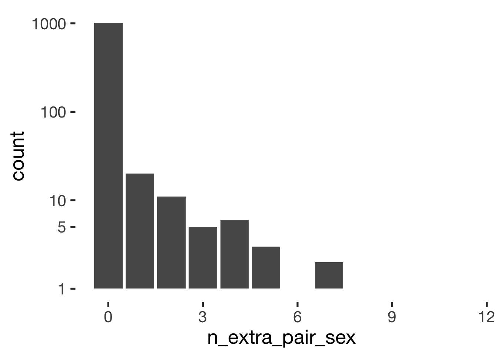
xtabs(~ hormonal_contraception + n_extra_pair_sex, data = sex_summary) %>% pander()| 0 | 1 | 2 | 3 | 4 | 5 | 7 | 8 | 11 | |
|---|---|---|---|---|---|---|---|---|---|
| 0 | 401 | 9 | 8 | 2 | 3 | 2 | 2 | 1 | 1 |
| 1 | 604 | 11 | 3 | 3 | 3 | 1 | 0 | 0 | 0 |
xtabs(~ hormonal_contraception + I(n_extra_pair_sex>0), data = sex_summary) %>% pander()| FALSE | TRUE | |
|---|---|---|
| 0 | 401 | 28 |
| 1 | 604 | 21 |
Extra-pair intimacy frequency
table(diary$extra_pair_intimacy) %>% pander()| 0 | 1 |
|---|---|
| 27442 | 385 |
prop.table(table(diary$extra_pair_intimacy)) %>% pander()| 0 | 1 |
|---|---|
| 0.9862 | 0.01384 |
ggplot(sex_summary, aes(n_extra_pair_intimacy)) + geom_bar() + scale_y_log10(breaks = c(1,5,10,100,1000))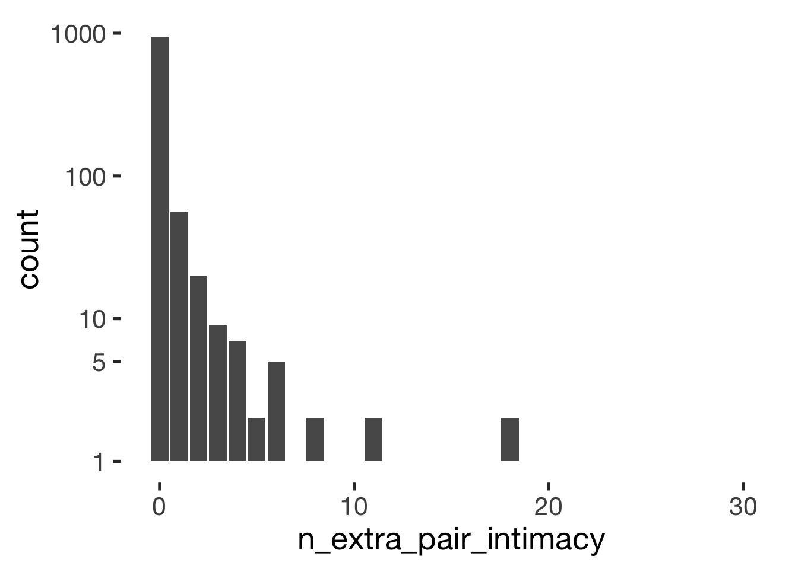
xtabs(~ hormonal_contraception + n_extra_pair_intimacy, data = sex_summary) %>% pander()| 0 | 1 | 2 | 3 | 4 | 5 | 6 | 7 | 8 | 9 | 10 | 11 | 12 | 13 | 18 | 19 | 20 | 30 | |
|---|---|---|---|---|---|---|---|---|---|---|---|---|---|---|---|---|---|---|
| 0 | 365 | 29 | 11 | 5 | 1 | 2 | 3 | 1 | 1 | 1 | 1 | 2 | 1 | 1 | 2 | 1 | 1 | 1 |
| 1 | 576 | 27 | 9 | 4 | 6 | 0 | 2 | 0 | 1 | 0 | 0 | 0 | 0 | 0 | 0 | 0 | 0 | 0 |
xtabs(~ hormonal_contraception + I(n_extra_pair_intimacy>0), data = sex_summary) %>% pander()| FALSE | TRUE | |
|---|---|---|
| 0 | 365 | 64 |
| 1 | 576 | 49 |
Sexual intercourse frequency
table(diary$had_sexual_intercourse) %>% pander()| 0 | 1 |
|---|---|
| 21758 | 6070 |
prop.table(table(diary$had_sexual_intercourse)) %>% pander()| 0 | 1 |
|---|---|
| 0.7819 | 0.2181 |
ggplot(sex_summary, aes(n_sex)) + geom_bar() + scale_y_log10(breaks = c(1,5,10,100,1000))ggplot(sex_summary, aes(n_sex/n_days)) + geom_histogram(binwidth = 0.01) + scale_y_log10(breaks = c(1,5,10,100,1000))## Warning: Transformation introduced infinite values in continuous y-axis## Warning: Removed 25 rows containing missing values (geom_bar).ggplot(sex_summary, aes(n_sex, n_days)) + geom_jitter(alpha = 0.1) + geom_abline(slope = 1, intercept = 0)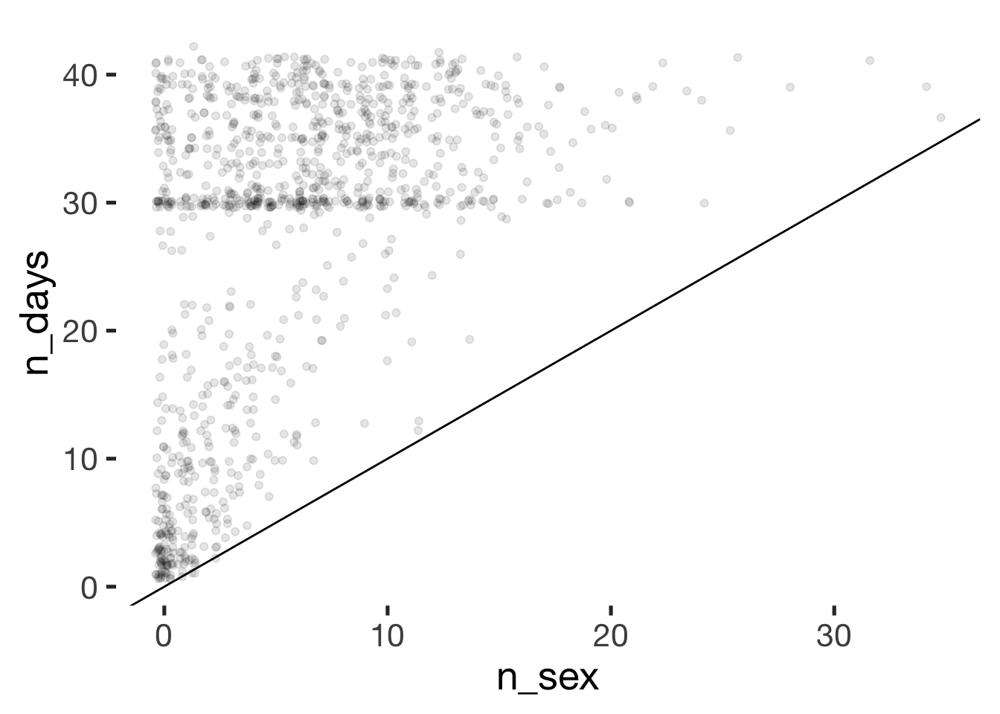
xtabs(~ hormonal_contraception + n_sex, data = sex_summary) %>% pander()| 0 | 1 | 2 | 3 | 4 | 5 | 6 | 7 | 8 | 9 | 10 | 11 | 12 | 13 | 14 | 15 | 16 | 17 | 18 | 19 | 20 | 21 | 22 | 23 | 24 | 25 | 26 | 28 | 32 | 34 | 35 | |
|---|---|---|---|---|---|---|---|---|---|---|---|---|---|---|---|---|---|---|---|---|---|---|---|---|---|---|---|---|---|---|---|
| 0 | 103 | 48 | 33 | 28 | 41 | 19 | 24 | 22 | 10 | 23 | 19 | 16 | 8 | 10 | 7 | 5 | 2 | 1 | 2 | 1 | 1 | 1 | 0 | 1 | 1 | 1 | 1 | 0 | 0 | 0 | 1 |
| 1 | 76 | 46 | 43 | 49 | 44 | 40 | 53 | 53 | 33 | 31 | 36 | 29 | 20 | 17 | 11 | 13 | 7 | 6 | 4 | 2 | 3 | 3 | 2 | 0 | 1 | 0 | 0 | 1 | 1 | 1 | 0 |
xtabs(~ hormonal_contraception + I(n_sex>0), data = sex_summary) %>% pander()| FALSE | TRUE | |
|---|---|---|
| 0 | 103 | 326 |
| 1 | 76 | 549 |
sex_summary %>% filter(n_days > 25) %>% group_by(hormonal_contraception) %>% summarise(sex = sum(n_sex>0), no_sex = sum(n_sex==0)) %>% pander()| hormonal_contraception | sex | no_sex |
|---|---|---|
| 0 | 249 | 38 |
| 1 | 432 | 31 |
Petting frequency
table(diary$had_petting) %>% pander()| 0 | 1 |
|---|---|
| 22378 | 5449 |
prop.table(table(diary$had_petting)) %>% pander()| 0 | 1 |
|---|---|
| 0.8042 | 0.1958 |
ggplot(sex_summary, aes(n_petting)) + geom_bar() + scale_y_log10(breaks = c(1,5,10,100,1000))ggplot(sex_summary, aes(n_petting/n_days)) + geom_histogram(binwidth = 0.01) + scale_y_log10(breaks = c(1,5,10,100,1000))## Warning: Transformation introduced infinite values in continuous y-axis## Warning: Removed 26 rows containing missing values (geom_bar).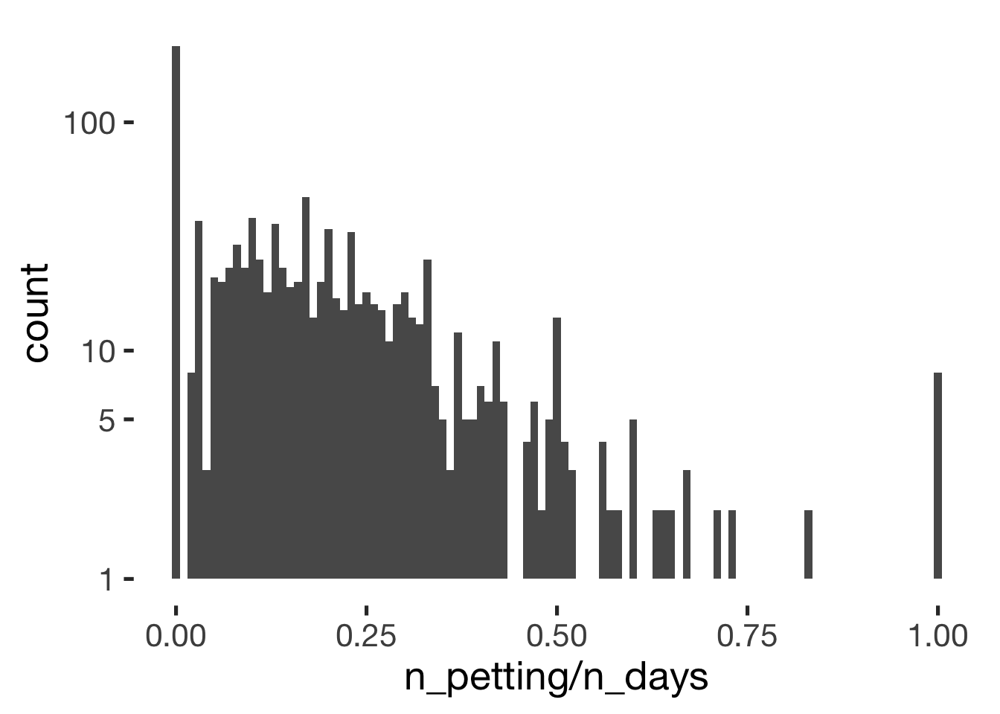
xtabs(~ hormonal_contraception + n_petting, data = sex_summary) %>% pander()| 0 | 1 | 2 | 3 | 4 | 5 | 6 | 7 | 8 | 9 | 10 | 11 | 12 | 13 | 14 | 15 | 16 | 17 | 18 | 19 | 20 | 21 | 22 | 23 | 24 | 25 | 26 | 27 | 29 | 32 | 34 | |
|---|---|---|---|---|---|---|---|---|---|---|---|---|---|---|---|---|---|---|---|---|---|---|---|---|---|---|---|---|---|---|---|
| 0 | 113 | 55 | 40 | 27 | 28 | 31 | 20 | 22 | 14 | 12 | 12 | 14 | 5 | 7 | 4 | 6 | 4 | 2 | 1 | 4 | 0 | 2 | 1 | 0 | 1 | 1 | 0 | 0 | 1 | 1 | 1 |
| 1 | 102 | 60 | 44 | 54 | 49 | 59 | 39 | 42 | 28 | 18 | 33 | 23 | 17 | 9 | 10 | 7 | 5 | 3 | 4 | 3 | 2 | 2 | 4 | 2 | 1 | 1 | 1 | 2 | 0 | 1 | 0 |
xtabs(~ hormonal_contraception + I(n_petting>0), data = sex_summary) %>% pander()| FALSE | TRUE | |
|---|---|---|
| 0 | 113 | 316 |
| 1 | 102 | 523 |
Measurement Reactivity
We test whether our analyses are robust to adjustments for measurement reactivity (operationalised as nonlinear time trends over number of days since the beginning of the diary, and over number of days filled out, ). The first approach do this is to test whether our main predictor, probability of being in the fertile window, varies systematically over days. This might happen, if women are more likely to begin our fill out the diary on (non)fertile days.
Because these analyses show small relationships to the predictor, that differ by hormonal contraception, we think it is worth testing if our results are robust to the inclusion of splines over days (since beginning/filled out).
library(gamm4)
diary %>% mutate(
included = included_all,
fertile = if_else(is.na(prc_stirn_b_squished), prc_stirn_b_backward_inferred, prc_stirn_b_squished)
) %>% group_by(person) %>% mutate(days_filled_out = row_number(day_number)) %>% filter(day_number < 40, days_filled_out < 37) %>%
gamm4(fertile ~ s(day_number, by = included)+ s(days_filled_out, by = included), ~ (1|person), data = .) -> trend
summary(trend$mer)## Linear mixed model fit by REML ['lmerMod']
##
## REML criterion at convergence: -10915
##
## Scaled residuals:
## Min 1Q Median 3Q Max
## -1.762 -0.742 -0.483 0.705 2.532
##
## Random effects:
## Groups Name Variance Std.Dev.
## person (Intercept) 0.00224 0.0473
## Xr.2 s(days_filled_out):includedhorm_contra 0.02012 0.1419
## Xr.1 s(days_filled_out):includedcycling 0.02246 0.1499
## Xr.0 s(day_number):includedhorm_contra 0.00000 0.0000
## Xr s(day_number):includedcycling 0.00257 0.0506
## Residual 0.03637 0.1907
## Number of obs: 24942, groups: person, 1054; Xr.2, 8; Xr.1, 8; Xr.0, 8; Xr, 8
##
## Fixed effects:
## Estimate Std. Error t value
## X(Intercept) 0.17166 0.00200 85.75
## Xs(day_number):includedcyclingFx1 -0.00160 0.01974 -0.08
## Xs(day_number):includedhorm_contraFx1 0.01262 0.00688 1.84
## Xs(days_filled_out):includedcyclingFx1 -0.00308 0.03086 -0.10
## Xs(days_filled_out):includedhorm_contraFx1 0.01100 0.02390 0.46
##
## Correlation of Fixed Effects:
## X(Int) X(_):F X(_):_ X(__):F
## Xs(dy_n):F1 -0.036
## Xs(dy_):_F1 -0.035 0.001
## Xs(dy__):F1 0.031 -0.439 -0.001
## Xs(d__):_F1 0.014 0.000 -0.256 0.000summary(trend$gam)##
## Family: gaussian
## Link function: identity
##
## Formula:
## fertile ~ s(day_number, by = included) + s(days_filled_out, by = included)
## <environment: 0x7f9c99ca2910>
##
## Parametric coefficients:
## Estimate Std. Error t value Pr(>|t|)
## (Intercept) 0.172 0.002 85.8 <2e-16 ***
## ---
## Signif. codes: 0 '***' 0.001 '**' 0.01 '*' 0.05 '.' 0.1 ' ' 1
##
## Approximate significance of smooth terms:
## edf Ref.df F p-value
## s(day_number):includedcycling 3.03 3.03 4.19 0.00557 **
## s(day_number):includedhorm_contra 1.00 1.00 3.37 0.06639 .
## s(days_filled_out):includedcycling 5.96 5.96 4.35 0.00029 ***
## s(days_filled_out):includedhorm_contra 6.52 6.52 13.27 5.2e-16 ***
## ---
## Signif. codes: 0 '***' 0.001 '**' 0.01 '*' 0.05 '.' 0.1 ' ' 1
##
## R-sq.(adj) = 0.00563
## lmer.REML = -10915 Scale est. = 0.036367 n = 24942plot(trend$gam, pages = 1)
Contraception
Very broad categories of contraceptive methods, as used in the analyses
xsection <- xsection %>% tbl_df()
count(xsection %>% tbl_df(), vars = contraceptive_method) %>% arrange(desc(n)) %>% mutate(percent = round(n/sum(n),2)) %>% filter(n > 2) %>% data.frame() %>% pander()| vars | n | percent |
|---|---|---|
| hormonal | 625 | 0.59 |
| barrier_or_abstinence | 293 | 0.28 |
| none | 73 | 0.07 |
| fertility_awareness | 53 | 0.05 |
| other | 10 | 0.01 |
Of hormonal contraceptives: pill
xsection %>% filter(contraceptive_method == 'hormonal') %>% mutate(contraceptive_pill = contraception %contains% "contraceptive_pill") %>% count(vars = contraceptive_pill) %>% arrange(desc(n)) %>% mutate(percent = round(n/sum(n),2)) %>% filter(n > 2) %>% data.frame() %>% pander()| vars | n | percent |
|---|---|---|
| TRUE | 549 | 0.88 |
| FALSE | 76 | 0.12 |
Of non-pill methods, other methods
otherhormmethods = c("1" = "depot-injected", "2" = "hormonal implant", "3" = "vaginal ring", "4" = "contraceptive patch", "5" = "hormonal IUD")
xsection = xsection %>% mutate(other_hormonal_methods = otherhormmethods[hormonal_1])
xsection %>% filter(contraceptive_method == 'hormonal') %>% mutate(contraceptive_pill = contraception %contains% "contraceptive_pill") %>% filter(contraceptive_pill == F) %>% count(vars = other_hormonal_methods) %>% arrange(desc(n)) %>% mutate(percent = round(n/sum(n),2)) %>% filter(n > 2) %>% data.frame() %>% pander()| vars | n | percent |
|---|---|---|
| NA | 31 | 0.41 |
| vaginal ring | 26 | 0.34 |
| hormonal IUD | 12 | 0.16 |
| depot-injected | 3 | 0.04 |
| hormonal implant | 3 | 0.04 |
cat("missings occurred here, because we asked about these only after the diary and not everyone finished")## missings occurred here, because we asked about these only after the diary and not everyone finishedSlightly more differentiated contraceptive methods
count(xsection, vars = contraceptives_broad_categories) %>% arrange(desc(n)) %>% mutate(percent = round(n/sum(n),2)) %>% filter(n > 2) %>% data.frame() %>% pander()| vars | n | percent |
|---|---|---|
| contraceptive_pill | 410 | 0.39 |
| condoms | 189 | 0.18 |
| contraceptive_pill, condoms | 124 | 0.12 |
| none | 73 | 0.07 |
| other_hormonal | 68 | 0.06 |
| intrauterine_pessar | 47 | 0.04 |
| occasionally_use_coitus_interruptus | 47 | 0.04 |
| other | 45 | 0.04 |
| counting_and_or_temperature_methods | 42 | 0.04 |
| partner_sterilised | 9 | 0.01 |
Methods as reported by at least 3 women
count(xsection, vars = contraception) %>% arrange(desc(n)) %>% mutate(percent = round(n/sum(n),2)) %>% filter(n > 2) %>% data.frame() %>% pander()| vars | n | percent |
|---|---|---|
| contraceptive_pill | 410 | 0.39 |
| condoms | 189 | 0.18 |
| contraceptive_pill, condoms | 124 | 0.12 |
| none | 73 | 0.07 |
| other_hormonal | 68 | 0.06 |
| intrauterine_pessar | 47 | 0.04 |
| condoms, kalendermethode | 12 | 0.01 |
| condoms, coitus_interruptus | 11 | 0.01 |
| coitus_interruptus | 10 | 0.01 |
| partner_sterilised | 9 | 0.01 |
| condoms, temperature_billings | 8 | 0.01 |
| none, condoms | 7 | 0.01 |
| other_hormonal, condoms | 7 | 0.01 |
| andere | 6 | 0.01 |
| condoms, kalendermethode, coitus_interruptus | 5 | 0 |
| kalendermethode | 4 | 0 |
| kalendermethode, coitus_interruptus | 4 | 0 |
| none, coitus_interruptus | 4 | 0 |
| none, partner_sterilised | 4 | 0 |
| condoms, intrauterine_pessar | 3 | 0 |
| contraceptive_pill, condoms, coitus_interruptus | 3 | 0 |
| kalendermethode, temperature_billings | 3 | 0 |
common <- head((count(xsection, vars=contraception) %>% arrange(desc(n)))$vars,10)
commoncontra = xsection %>% filter(contraception %in% common)
bar_count(commoncontra, contraception)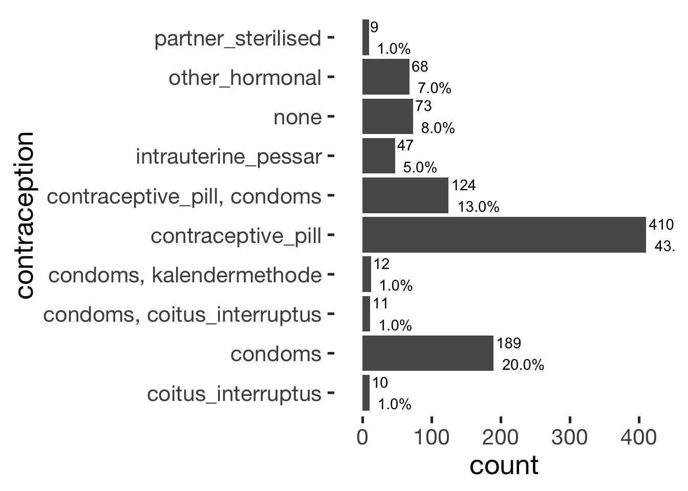
Common pill brands
count(xsection, vars=pills) %>% filter(!is.na(vars)) %>% arrange(desc(n)) %>% mutate(percent = round(n/sum(n),2)) %>% filter(n > 10) %>% data.frame() %>% pander()| vars | n | percent |
|---|---|---|
| maxim | 88 | 0.16 |
| other | 48 | 0.09 |
| belara | 25 | 0.05 |
| velafee | 25 | 0.05 |
| lamuna_20 | 24 | 0.04 |
| valette | 21 | 0.04 |
| microgynon | 16 | 0.03 |
| asumate_20 | 15 | 0.03 |
| chariva | 15 | 0.03 |
| evaluna_20 | 15 | 0.03 |
| minisiston_20_fem | 15 | 0.03 |
| leonahexal | 12 | 0.02 |
| aida | 11 | 0.02 |
| bellissima | 11 | 0.02 |
| minisiston | 11 | 0.02 |
Contraception and cycle regularity
reported any period?
this includes the whole sample, because having a period was a mandatory inclusion criterion
crosstabs(~ had_any_period + contraceptive_method , data = xsection2) %>%
prop.table(2) %>%
round(2) %>%
pander()| barrier_or_abstinence | fertility_awareness | hormonal | none | other | |
|---|---|---|---|---|---|
| FALSE | 0.09 | 0.11 | 0.09 | 0.21 | 0.26 |
| TRUE | 0.91 | 0.89 | 0.91 | 0.79 | 0.74 |
crosstabs(~ had_any_period + contraceptive_method , data = xsection2 %>% filter(n_days > 20)) %>%
round(2) %>%
pander()| barrier_or_abstinence | fertility_awareness | hormonal | none | other | |
|---|---|---|---|---|---|
| FALSE | 3 | 1 | 19 | 10 | 3 |
| TRUE | 202 | 38 | 479 | 50 | 11 |
xsection2 %>% filter(n_days > 20, contraceptive_method == 'hormonal', !had_any_period) %>% select(contraception, age, n_days, pills) %>% pander()| contraception | age | n_days | pills |
|---|---|---|---|
| none, contraceptive_pill | 24 | 29 | evaluna_30 |
| other_hormonal | 50 | 24 | NA |
| contraceptive_pill, condoms | 23 | 39 | seculact |
| contraceptive_pill | 22 | 33 | desirett |
| contraceptive_pill | 24 | 29 | desirett |
| other_hormonal | 49 | 30 | NA |
| contraceptive_pill | 21 | 26 | zoely |
| other_hormonal | 24 | 30 | NA |
| contraceptive_pill | 20 | 30 | lamuna_20 |
| other_hormonal | 24 | 38 | NA |
| other_hormonal | 27 | 34 | NA |
| contraceptive_pill, condoms | 23 | 31 | bellissima |
| contraceptive_pill | 33 | 29 | desmin_20 |
| contraceptive_pill | 22 | 39 | maxim |
| contraceptive_pill | 24 | 30 | jubrele |
| contraceptive_pill | 30 | 28 | cilest |
| contraceptive_pill, condoms | 37 | 30 | other |
| contraceptive_pill | 20 | 28 | maxim |
| contraceptive_pill | 18 | 38 | other |
crosstabs(~ cycle_length_groups + contraceptive_method , data = xsection) %>%
prop.table(2) %>%
round(2) %>%
pander()| barrier_or_abstinence | fertility_awareness | hormonal | none | other | |
|---|---|---|---|---|---|
| (19,25] | 0.13 | 0.08 | 0.16 | 0.12 | 0.1 |
| (25,30] | 0.65 | 0.74 | 0.77 | 0.62 | 0.8 |
| (30,35] | 0.17 | 0.19 | 0.04 | 0.16 | 0.1 |
| (35,41] | 0.05 | 0 | 0.03 | 0.1 | 0 |
xsection %>%
group_by(contraceptive_method) %>%
summarise(cycle_length = mean(cycle_length, na.rm = T), sd = sd(cycle_length, na.rm = T), n = n()) %>%
pander()| contraceptive_method | cycle_length | sd | n |
|---|---|---|---|
| barrier_or_abstinence | 29 | NA | 293 |
| fertility_awareness | 29.04 | NA | 53 |
| hormonal | 27.96 | NA | 625 |
| none | 29.62 | NA | 73 |
| other | 28.4 | NA | 10 |
qplot(cycle_length, data = xsection, binwidth = 1) + facet_wrap(~ contraceptive_method, scales = "free_y")qplot(cycle_length, data = xsection, binwidth = 1) + facet_wrap(~ contraceptive_method_by_pearl, scales = "free_y")xsection %>% select(cycle_length, partner_attractiveness_physical,partner_attractiveness_shortterm, partner_attractiveness_rel_to_self, ZIP, duration_relationship_total) %>% cor(use='pairwise.complete.obs') %>% round(2) %>% .[1, -1]## partner_attractiveness_physical partner_attractiveness_shortterm partner_attractiveness_rel_to_self
## 0.00 -0.01 0.01
## ZIP duration_relationship_total
## 0.05 0.09Origin
plz_populations = read.csv("geo/plz_einwohner.csv")
plz_populations %>% mutate(plz = str_pad(plz, 5, "left", "0"),
postal_code = str_sub(plz, 1, 3)) %>%
group_by(postal_code) %>%
summarise(einwohner = sum(einwohner, na.rm = T)) %>%
tbl_df() -> plz_populations
xsection %>%
select(postal_code) %>%
group_by(postal_code) %>%
summarise(count = n()) %>%
right_join(plz_populations, by = 'postal_code', copy = T) %>%
mutate(count = ifelse(is.na(count), 0, count),
percent = count/einwohner) -> origins## Warning: Column `postal_code` has different attributes on LHS and RHS of join# origins
#
#
library(leaflet)
# library(rgdal) # required for readOGR and spTransform
# map <- readOGR(dsn="geo/plz-3stellig.shp/", layer="plz-3stellig",verbose = F)
# library(rgeos)
# # plot(map)
# map = SpatialPolygonsDataFrame(gSimplify(map, tol = 0.001, topologyPreserve = T), data = data.frame(map))
#
# save(map, file = "geo/map.rdata")
load("geo/map.rdata")
origins = data.frame(postal_code = map$plz) %>% left_join(origins, by = 'postal_code')## Loading required package: sp## Warning: Column `postal_code` has different attributes on LHS and RHS of joinmap$count = origins$count
map$einwohner = origins$einwohner
map$percent = origins$percent
map$popup1 <- paste0("Count: ",
map$count, #column containing the district names
"<br>Populaton: ",
map$einwohner)
palette <- colorNumeric(c("white","red"), c(0, max(log1p(origins$percent * 10000))))
map$fill = palette(log1p(map$percent * 10000))
map = map[map$count > 0,]
mymap <- leaflet() %>%
addProviderTiles("OpenStreetMap.BlackAndWhite",
options = providerTileOptions(minZoom=6, maxZoom=10)) %>%
addPolygons(data = map,
fillColor = ~fill,
stroke = F,
fillOpacity = 0.6,
popup = ~popup1
) %>%
setView(9.812, 51.56, zoom = 6)
# mymap
library(htmlwidgets)
saveWidget(mymap, file = "2_origin_map.html", selfcontained = F)Components/factors in preregistered outcomes
diary %>% ungroup() %>% select(extra_pair, in_pair_desire, desirability_1, had_sexual_intercourse, partner_initiated_sexual_intercourse, partner_mate_retention, sexy_clothes, NARQ_admiration, NARQ_rivalry) %>%
psych::fa.parallel(fa='pc')## Parallel analysis suggests that the number of factors = NA and the number of components = 3